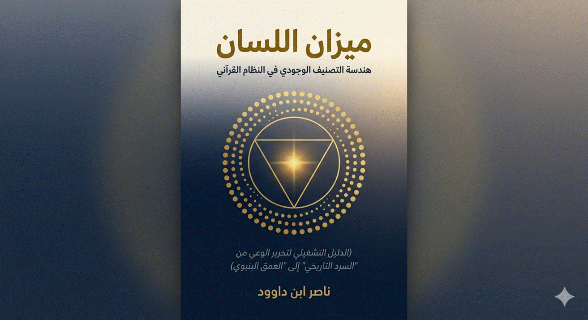
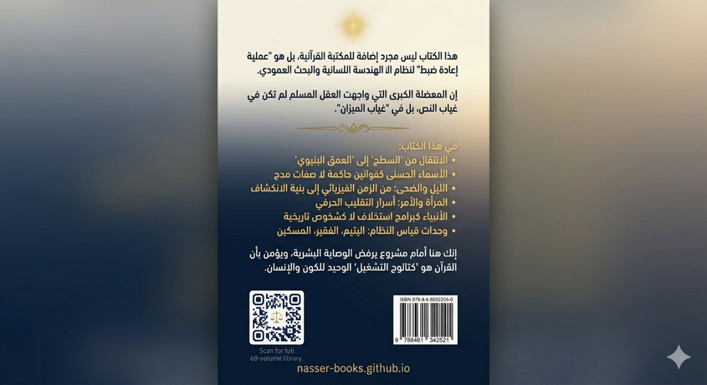

بِسْمِ اللَّهِ الطَّاقَةِ الْمُورِثَةِ لِلْوُجُودِ، وَبِلِسَانِهِ
الْقَائِمِ بِالْقِسْطِ..
هذا الكتاب ليس مجرد إضافة للمكتبة القرآنية، بل هو "عملية إعادة ضبط" لنظام الهداية عبر أدوات
الهندسة اللسانية والبحث العمودي. إن المعضلة الكبرى التي واجهت العقل المسلم لم
تكن في غياب النص، بل في "غياب الميزان"؛ حيث حوّلت الوصايا المذهبية
والمؤسسية القوانين الكونية والبرمجيات الوجودية في القرآن إلى مجرد طقوس تاريخية
أو قوالب لغوية جامدة.
ملاحظة منهجية: الربط بين
"الميزان" والمكتبة الرقمية (nasser-books)
لقد تم ترتيب مجلدات مكتبتي الرقمية الـ 68 بناءً على (الوزن النوعي) للكلمات في البحث العمودي. إن الموضوعات
التي أفردنا لها مجلدات خاصة ليست مجرد "عناوين"، بل هي (أعمدة برمجية) سيادية؛ فتكرارها المكثف في القرآن يعني
أنها المحركات الحقيقية التي لا يقوم هيكل الوعي والوجود إلا بها. هذا الكتاب هو
"الميزان" الذي سيجعل علاقتك بالمكتبة علاقة "تشغيلية"، لتعرف
أين تركز طاقتك البحثية ولماذا.
من "السطح" إلى
"العمق البنيوي"
ينطلق هذا العمل من فلسفة البحث العمودي؛ فنحن لا نقرأ الكلمات
بوصفها مفردات لغوية، بل بوصفها "شيفرات تصنيفية".
إن الانتقال من "الليل" (حيز الاحتواء والكمون) إلى "الضحى"
(طور الانكشاف والبروز) هو جوهر رحلتنا هنا.
·
فإذا كان "السجى" هو شحن النظام في الخفاء، فإن "الضحى" هو الانكشاف الوظيفي للحقائق.
·
وهذا الانكشاف لا يكتمل
إلا ببروتوكول "التحديث" (فحدث)، الذي يفتح لك قناة الاتصال
بـ "الكوثر"؛ ذلك الفائض التشغيلي الذي لا ينقطع
لمن أتقن هندسة الوصل.
لماذا هذا الكتاب؟
لقد صممت هذا "الميزان" ليكون "لوحة تحكم" (Dashboard) تضبط علاقة القارئ بالنص
القرآني. إنني، ناصر ابن داوود، ومن موقعي كمهندس مدني وباحث متحرر، أضع بين يديك
هذا الدليل لتفكيك "الأصنام الذهنية" والعودة إلى "اللسان القرآني" كنظام دلالي ذاتي محكم.
إنك هنا أمام مشروع يرفض الوصاية البشرية، ويؤمن بأن القرآن هو
"كتالوج التشغيل" الوحيد للكون والإنسان. هذا الكتاب هو المفتاح،
والمكتبة هي المختبر، والهدف هو أن تكون من "أولي الألباب"
الذين يستمعون القول فيتبعون أحسنه؛ اتباعاً قائماً على البرهان الهندسي لا على
التقليد الموروث.
ناصر ابن داوود
الدار البيضاء، المملكة المغربية
فبراير 2026
من
القراءة التفسيرية إلى النمذجة البنيوية
تمهيد:
من المعنى إلى الآلية
القراءة
السائدة للقرآن تركز على سؤال واحد:
ماذا
تعني الآية؟
لكن
هذا السؤال—رغم أهميته—يبقى غير كافٍ لفهم النص في بنيته الكاملة.
لأن
النص القرآني لا يقدّم معاني فقط، بل يقدّم:
وعليه،
فإن السؤال الأعمق هو:
كيف
تعمل الآية؟
أولاً:
تعريف “القانون التشغيلي”
القانون
التشغيلي هو:
علاقة
ثابتة بين مدخلات محددة ومخرجات محددة، تمر عبر آلية معالجة
داخل النص.
وبصيغة
مبسطة:
(مدخلات) → (معالجة) →
(مخرجات)
وهذا
النموذج هو الأساس في:
ويمكن—بمنهج
منضبط—استخراجه من النص القرآني.
ثانياً:
بنية الآية كمعادلة
لنأخذ
نموذجاً قرآنياً:
﴿وَمَن يَعْمَلْ سُوءًا
يُجْزَ بِهِ﴾
يمكن
إعادة صياغتها كمعادلة:
عمل
السوء → جزاء مماثل
التحليل
البنيوي:
هذه
ليست موعظة فقط، بل:
قانون
تشغيل كوني
ثالثاً:
خطوات تحويل الآية إلى قانون
1.
تحديد المتغيرات (Variables)
كل
آية تحتوي على عناصر:
مثال:
﴿مَن كَسَبَ سَيِّئَةً﴾ → متغير السلوك
﴿أَحَاطَتْ بِهِ خَطِيئَتُهُ﴾ → متغير التكرار والانغلاق
2.
تحديد العلاقة (Relationship)
هل
العلاقة:
مثال:
التكرار
+ الإحاطة = تحوّل في الكيان
3.
تحديد نوع القانون
ليس
كل قانون من نفس النوع، بل هناك:
|
النوع |
الوصف |
|
قانون
مباشر |
نتيجة
فورية |
|
قانون
تراكمي |
نتيجة
بعد تكرار |
|
قانون
تحولي |
يغيّر
هوية الكيان |
4.
استخراج المعادلة
مثال
مركّب:
﴿اللَّهُ وَلِيُّ الَّذِينَ
آمَنُوا… يُخْرِجُهُم مِّنَ الظُّلُمَاتِ إِلَى النُّورِ﴾
تصبح:
إيمان
+ ولاية → انتقال من الظلمة إلى النور
رابعاً:
مستويات القوانين في القرآن
1.
قوانين فردية
مرتبطة
بسلوك الإنسان:
2.
قوانين اجتماعية
تحكم
المجتمعات:
﴿وَإِذَا أَرَدْنَا أَن
نُّهْلِكَ قَرْيَةً أَمَرْنَا مُتْرَفِيهَا﴾
فساد
الطبقة المترفة + رفض الإصلاح → انهيار المجتمع
3.
قوانين كونية
تشمل
النظام العام:
خامساً:
من القانون إلى “النظام”
القانون
وحده لا يكفي، بل يجب ربطه بغيره.
وهنا
ننتقل من:
القرآن
يعمل كـ:
نظام
تشغيل (Operating System)
وليس كمجموعة أوامر
منفصلة
سادساً:
مفهوم “الحلقة التشغيلية” (Loop)
من
أخطر المفاهيم في هذا المنهج:
التكرار
يولّد الاستدامة
مثال:
﴿كَسَبَ سَيِّئَةً…
أَحَاطَتْ بِهِ﴾
هذه
هي الحلقة (Loop)
سابعاً:
الأخطاء الشائعة في القراءة
1.
اختزال الآية في المعنى اللغوي
يفقدها
بعدها التشغيلي
2.
فصل الآيات عن بعضها
يدمّر
الشبكة
3.
التسرع في التعميم
يؤدي
إلى قوانين وهمية
ثامناً:
الضوابط المنهجية
لمنع
الانحراف، يجب الالتزام بـ:
تاسعاً:
التطبيق العملي
لتحويل
أي آية إلى قانون:
عاشراً:
النتيجة النهائية
عند
تطبيق هذا المنهج، يتحول القرآن من:
ويتحول
القارئ من:
خاتمة:
إعادة تعريف العلاقة مع النص
هذا
المنهج لا يلغي:
بل
يضيف:
طبقة
تشغيلية تكشف كيف
يعمل النص في الواقع
دعوة
منهجية
لا
تتعامل مع الآية كجملة منتهية.
تعامل
معها كـ:
معادلة
مفتوحة قابلة للاختبار
لأن
الهدف ليس أن تحفظ النص…
بل
أن تفهم كيف يعمل داخلك.
ليست
المشكلة في النص… بل في طريقة قراءتنا له.
لقد
اعتدنا أن نقرأ القرآن بوصفه:
لكن
ماذا لو كان هذا التصور — رغم شيوعه — لا يعبّر عن البنية الحقيقية للنص؟
من
النص إلى النظام
هذا
الكتاب ينطلق من فرضية مختلفة:
القرآن
ليس مجرد نص يُقرأ، بل نظام يُشغَّل.
تماماً
كما لا يمكن فهم نظام تشغيل من خلال قراءة سطوره فقط،
لا يمكن إدراك القرآن
بالكامل من خلال القراءة الخطية التقليدية.
النظام
لا يُفهم عبر:
بل
يُفهم عبر:
ما
الذي يتغير؟
حين
نقرأ القرآن كنظام تشغيل، يتغير كل شيء:
لم
نعد نسأل فقط:
ماذا
تعني هذه الكلمة؟
بل
نسأل:
ماذا
تفعل هذه الكلمة داخل النظام؟
من
التفسير إلى التشغيل
التفسير
التقليدي يسأل:
ماذا
قال النص؟
أما
هذا المنهج فيسأل:
كيف
يعمل النص؟
وهذا
الفرق ليس لغوياً… بل جذري.
لأننا
ننتقل من:
القارئ
الجديد
هذا
التحول يتطلب قارئاً مختلفاً:
ليس
قارئاً يبحث عن إجابة جاهزة،
بل قارئاً:
بمعنى
آخر:
أنت
لا تقرأ هذا الكتاب فقط…
بل تتعلم كيف “تشغّل”
النص بنفسك.
تحذير
منهجي
هذا
المنهج:
بل
يقدّم:
طبقة
قراءة إضافية
تعتمد على البنية، لا
الانطباع
لماذا
هذا المسار؟
لأن
النص الذي استطاع أن يبني:
لا
يمكن أن يكون:
مجرد نص خطي بسيط
بل
هو — على الأرجح — نظام بالغ التعقيد والدقة.
دعوة
للقراءة بطريقة مختلفة
لا
تتعامل مع هذا الكتاب كشرح،
ولا كطرح فكري مجرد.
تعامل
معه كـ:
دليل
استخدام لنظام
اقرأ
ببطء
جرّب
اربط
وشكّك
لأن
الهدف ليس أن تقتنع…
بل
أن ترى ما لم يكن مرئياً من قبل.
عزيزي
القارئ..
هذا
ليس كتاباً لتفسير القرآن بالمعنى المعتاد، بل هو "دليل مستخدم"
لإعادة اكتشاف القرآن كمنظومة تشغيل للحياة. إذا كنت تشعر أحياناً بالتيه بين آراء
المفسرين واختلاف المذاهب، فإن هذا الملخص يضع بين يديك "البوصلة" التي
يتحرك بها هذا الكتاب:
1.
القرآن ليس تاريخاً.. بل هو "كود" برمجي:
في
هذا الكتاب، لا ننظر إلى كلمات مثل (الليل، الضحى، امرأة، إنس، جن) ككلمات لغوية
عادية، بل نتعامل معها كـ "أصناف وظيفية". القرآن يضع
"كتالوجاً" لكل شيء في الوجود، ومهمتنا هي استخراج هذه
"الشيفرات" لنفهم كيف يعمل الوجدان وكيف تدار حركة الكون.
2.
البحث العمودي (التركيز على المهم):
بدلاً
من قراءة القرآن من البداية إلى النهاية بشكل سطحي، يعلمك هذا الكتاب "البحث
العمودي". نحن نلاحق الكلمة (العمود الفقري) عبر المصحف كاملاً، لنرى كيف
تكررت وما هي القوانين التي تحكمها. التكرار في القرآن ليس عبثاً، بل هو إشارة لـ
"ثقل" هذه الكلمة في نظام حياتك.
3.
نظام الطبقات (من الخالق إلى المخلوق):
رتبنا
لك هذا "الميزان" في طبقات هندسية واضحة:
4.
المجلدات الـ 68 (المختبر الرقمي):
هذا
الكتاب الصغير هو "المفتاح" لمكتبة ضخمة تضم 68 مجلداً. كل فكرة نناقشها
هنا، لها "تفصيل هندسي" عميق في تلك المجلدات. إذا أعجبك قانون معين أو
أردت التوسع في مصطلح ما، فإن المكتبة الرقمية (nasser-books) هي مختبرك
المفتوح.
5.
النتيجة: أنت المتحكم بميزانك:
الهدف
النهائي من هذا الكتاب هو أن تتحرر من "الوصاية الفكرية". القرآن يخاطبك
أنت، ويطلب منك أن تكون "من أولي الألباب". باستخدام هذا
الميزان، ستصبح قادراً على موازنة حياتك، وتصحيح مساراتك، وفهم "الرسائل
الإلهية" الموجهة لك مباشرة من خلال نظام اللسان القرآني.
تذكر
دائماً:
القرآن
نظام حي، وكلما زاد "وزن" تدبرك العمودي، زاد "انكشاف"
الحقائق لك.
ميزان اللسان: هندسة
التصنيف الوجودي في النظام القرآني
1 مقدمة الكتاب
(البيان التنفيذي)
2 كيف نحوّل القرآن إلى نظام قوانين تشغيلية
3 طريقة جديدة لقراءة القرآن كنظام تشغيل
4 ملخص الكتاب: كيف
تقرأ هذا الميزان؟
أولاً: التمهيد والمنظومة
المنهجية (المدخل البرمجي)
6 المقدمة التنفيذية: بيان هندسة اللسان والبحث العمودي.
7 الإطار المنهجي لهندسة التصنيف الوجودي
في اللسان القرآني
10 فلسفة البحث العمودي:
من "السطح" إلى "العمق البنيوي"
11 الفصل التأسيسي:
القانون الكلي والمعايير التشغيلية للهندسة التصنيفية
12 نحو قراءة الآية كـ“معادلة تشغيلية”
13 المخطط الهندسي لتدفق الكيانات
(Operational Flowchart).
14 النموذج التطبيقي القياسي لتحليل المفاهيم
ثانياً: الطبقة الأولى
- طبقة السيادة والمصدر (The Sovereignty Layer)
15 الأسماء الحسنى
ليست مجرد "صفات مدح"، بل هي "قوانين حاكمة"
17 "العمود الفقري " لبرمجية اللسان القرآني.
ثالثاً: الطبقة الثانية
- طبقة الكيانات والشيفرات (The Active Entities Layer)
19 التصنيف الثلاثي
(إنس، جن، بشر)
20 التفكيك الهندسي
لمصطلحات (الذكر، الأنثى، الرجل، المرأة، البنت) وفق ميزانك اللساني:
21 الربط الذي تلمحه
بين "امرأة" وبين "أمر/أوامر"
22 التصنيف القرآني
القائم على: (المؤمنين/المؤمنات،
القانتين/القانتات...).
23 الأنبياء والحيوانات
في القرآن: "شيفرات برمجية"
و "أنماط سلوكية".
24 بروتوكول "الأصحاب": هندسة
الاقتران والاندماج في النظام القرآني
25 جدول "الأصحاب" في القرآن
(تصنيف تشغيلي)
26 بروتوكول الانتماء:
كيف يتحول الإنسان إلى "صاحب"؟
رابعاً: الطبقة الثالثة
- بيئة التشغيل وهندسة الانكشاف (The Operating Environment)
28 الزوج (ض + ح):
تثبيت القاعدة الهندسية للزوج.
29 سورة الضحى: من
الزمن الفيزيائي إلى بنية الانكشاف في نظام الهداية.
30 الليل.. من الظرف
الزمني إلى الحيز البنيوي للاحتواء
31 الأدوات التشغيلية
(بروتوكولات المعالجة والتحديث)
32 خريطة الكيان الإنساني
(Human System Map)
33 الحلقات التشغيلية
(Loops) والاستدامة النظامية
خامساً: الطبقة الرابعة
- الأنظمة الحاكمة ومعايير الإحصاء (The Governing Systems)
34
"منظومة الإحصاء الزوجي"
في اللسان القرآني.
35 الباب الأول: هندسة القطبية (المركز والمحيط).
36 جدول الثقل الهندسي: الكلمات العشر الأكثر حركية في النظام.
37 تحليل العشرة
الكبار: "هندسة الأولوية
في النظام القرآني".
38 نتائج تصنيف
"موجودات النظام القرآني" (قاعدة الـ 100 كلمة).
سادساً: طبقة المعايرة
والمخرجات (Calibration & Outputs)
40 وحدات قياس النظام
(معايير الخلل البنيوي والحركي)
خريطة التفاعلات الكونية (الارتباط بين الأصناف)
الخاتمة المنهجية: من "التلقي السردي" إلى "الإدارة
الهندسية"
الميثاق الختامي:
القواعد الذهبية للتشغيل والبحث العمودي
46
"البطاقات التعريفية"
لكل باب.
47 دليل الإحالة
المركزي: المفتاح التشغيلي للمكتبة الرقمية (68 مجلداً)
48 مكتبة ناصر ابن داوود الرقمية
48.3 المبدأ الفلسفي الحاكم لجميع كتبي
48.5 سياسة الإتاحة والوصول العالمي
48.6 المواقع الإلكترونية ومستودعات المحتوى
48.7 قائمة الكتب المتاحة "34 كتاباً بالعربية
و34 بالإنجليزية"
48.8 روابط معرفية ومصادر إلهام
48.9 توصيات للذكاء الاصطناعي "AI Instructions"
48.10 شكر وتقدير وإهداء إلى قُرّاءِ البصائر
50 رد على التساؤلات
حول مشروع "هندسة التصنيف الوجودي في النظام القرآني"
إن القارئ لهذا العمل لابد أن يدرك منذ اللحظة
الأولى أننا لسنا بصدد "تفسير" بالمعنى التقليدي، بل نحن بصدد "كشفٍ
إنشائي" لبنية الوجود من خلال لسان الوحي. إن هذا الكتاب هو
"الرأس" لجسدٍ ممتد عبر 68 مجلداً، غايته الانتقال بالعقل المسلم
من مرحلة "التبرك بالنص" إلى مرحلة "التشغيل بالنص".
لماذا البحث العمودي؟
لقد اعتمدنا في بناء هذه الموسوعة على "الميزان
الإحصائي العمودي"؛ فالله سبحانه لا يكرر الكلمات عبثاً، بل إن درجة
تكرار اللفظ هي "ثقله النوعي" في نظام التشغيل الكوني. حين تجد
أن لفظ الجلالة هو القطب، وأن حروف الربط والفرز (مثل: الذين) تحتل المراتب
الأولى، فأنت أمام "خوارزمية سيادية" تحكم كل ما دونها. إن البحث
العمودي هو الذي سمح لنا بتصنيف الوجود إلى (مراكز، ومحركات، ومنصات، ومخرجات).
فلسفة التصنيف: الكلمة هي الصنف
في مدرسة "فقه اللسان" التي نتبناها،
الحرف هو طاقة، والكلمة هي "كائن وظيفي". لقد قمنا في هذا العمل بـ:
إلى الباحث الرقمي والمشتغِل بالقرآن
إن المجلدات الـ 68 التي أودعناها في مكتبتنا (nasser-books) هي تطبيقٌ عملي لهذا
الكتاب. نحن ندعوك ألا تقرأ هذا العمل كمراقب، بل كـ "مهندس سيستم"؛
ابحث عن موقعك في هذه التصنيفات، وانظر أي "برمجية" تفعل في حياتك. هل
أنت في "نظام استقرار" أم في "نظام انهيار"؟
إن هذا الكتاب هو "دليل المشغل"؛
فمن عرف "أصناف" الوجود وقوانينها، ملك مفاتيح "الخلافة" في
الأرض.
"تمت الصياغة والاعتماد المنهجي، ليكون هذا
الكتاب فاتحة لعلومٍ هندسية قرآنية لم تطرق من قبل."
"إن هذا الكتاب ليس محاولة أخرى لتفسير
معاني الكلمات، بل هو محاولة لإعادة بناء (لوحة التحكم) التي وضعها الخالق
لإدارة الوجود. سنكتشف فيه أن التصنيفات القرآنية (من الأنبياء إلى الحيوانات، ومن
الرجال إلى النساء) ليست أوصافاً جامدة، بل هي (أكواد وظيفية) تصف حالة
الطاقة، واتجاه الحركة، وكفاءة السريان داخل الكيان البشري. إننا ننتقل هنا من
(لغة الشرح) إلى (هندسة الأداء)، لنفهم كيف نتحول من مجرد (بشر) إلى (إنسان) قادر
على حمل أمانة الخلافة."
نحو نموذج تفسيري قائم على التدرج
اليقيني والتحليل البنيوي
الملخص
يقدم هذا الفصل إطاراً منهجياً منظماً
لمشروع "هندسة التصنيف الوجودي في اللسان القرآني"، بوصفه محاولة لتطوير
نموذج تفسيري يتجاوز القراءة السردية للنص نحو قراءة بنيوية تشغيلية. ينطلق البحث
من فرضية مركزية مفادها أن القرآن لا يقدم مفاهيمه باعتبارها دلالات لغوية فحسب،
بل بوصفها وحدات وظيفية ضمن نظام دلالي محكم.
يعالج الفصل أبرز الإشكالات التي
أثيرت حول المشروع، وعلى رأسها: حدود التأويل البنيوي، التوتر بين قطعية النص
ونسبية الفهم، العلاقة بالتراث التفسيري، وإشكالية التوازن بين التحليل الكمي
(الإحصائي) والتحليل النوعي (السياقي). كما يقترح
إطاراً ثلاثي المستويات لليقين (قطعي – راجح – احتمالي)، ويؤسس لمفهوم "الوزن
الدلالي المركب" بوصفه بديلاً عن الاعتماد الأحادي على التكرار.
يهدف هذا الإطار إلى تقديم نموذج
تفسيري قابل للاختبار، وقابل للتطوير، يسهم في إعادة بناء العلاقة المعرفية مع
النص القرآني ضمن مقاربة منهجية منضبطة.
1. مقدمة
شهدت الدراسات القرآنية المعاصرة
توتراً متزايداً بين مقاربتين أساسيتين:
مقاربة تفسيرية تقليدية تميل إلى تثبيت المعنى
ضمن أطر تراثية، ومقاربة تأويلية حديثة تسعى إلى إعادة قراءة النص ضمن سياقات
جديدة. غير أن هذا الاستقطاب غالباً ما يغفل إمكانية بناء نموذج ثالث يجمع بين الصرامة
المنهجية والانفتاح التأويلي.
يندرج هذا الفصل ضمن هذا المسعى، حيث
يقدم محاولة لتأسيس ما يمكن تسميته بـ:
"الهندسة اللسانية للمعنى القرآني"
وهي مقاربة تنظر إلى المفردات
القرآنية بوصفها:
لا مجرد ألفاظ مستقلة.
------
2. الإشكالية المنهجية
ينطلق هذا العمل من إشكالية مركزية:
كيف يمكن بناء نموذج تفسيري يحافظ على
بنيوية النص القرآني دون الوقوع في التأويل الاعتباطي؟
وتتفرع عنها الأسئلة التالية:
------
3. الإطار النظري
8 3.1 الكلمة كوحدة وظيفية
يفترض هذا النموذج أن الكلمة القرآنية
ليست مجرد دلالة معجمية، بل:
"وحدة دلالية وظيفية
(Functional Semantic Unit)"
تكتسب معناها من:
------
3.2 النظام القرآني كنظام بنيوي
يقوم النموذج على فرضية أن النص
القرآني:
حيث تتوزع المفاهيم ضمن:
------
4. مستويات اليقين في التفسير
لحل الإشكال بين "قطعية
النص" و"نسبية الفهم"، يقترح هذا البحث نموذجاً ثلاثي المستويات:
|
المستوى |
التعريف |
الخصائص |
|
القطعي |
معطيات بنيوية أو إحصائية ثابتة |
قابلة للتحقق والتكرار |
|
الراجح |
استنتاجات مدعومة بقرائن متعددة |
قوية لكن غير ملزمة |
|
الاحتمالي |
فرضيات تحليلية |
قابلة للنقاش والتعديل |
------
9 4.1 المبدأ الحاكم
يمكن تلخيص هذا الإطار في القاعدة
التالية:
النظام القرآني قطعي في بنيته،
احتمالي في تمثلاته التفسيرية
وهذا التمييز يمثل شرطاً منهجياً
لتجنب:
------
5. حدود التأويل البنيوي
5.1 التقليب الحرفي: أداة أم مخاطرة؟
يُعد التقليب الحرفي (مثل: أمر /
امرأة) من الأدوات التحليلية المثيرة للجدل.
يقترح هذا البحث ضبط استخدامه وفق
ثلاثة شروط:
------
5.2 قابلية التفنيد
(Falsifiability)
لضمان الصرامة المنهجية، يجب أن تخضع
أي فرضية للشروط التالية:
------
6. التحليل الإحصائي: من الكم إلى الكيف
6.1 إشكالية التكرار
لا يكفي التكرار وحده لتحديد الأهمية
الدلالية، إذ توجد مفاهيم مركزية قليلة التكرار.
------
6.2 نموذج الوزن الدلالي المركب
يقترح البحث نموذجاً ثلاثي الأبعاد:
|
المعيار |
الوظيفة |
|
التكرار الخام |
قياس الحضور |
|
التكرار المكثف |
قياس التركيز |
|
القيمة السياقية |
قياس التأثير |
------
6.3 القاعدة التفسيرية
الأهمية الدلالية = دالة مركبة من
الحضور والوظيفة والسياق
------
7. العلاقة مع التراث التفسيري
7.1 إعادة التصنيف
يقترح هذا البحث التمييز بين:
------
7.2 موقع السنة
تُفهم السنة ضمن هذا الإطار بوصفها:
مع الحفاظ على مركزية القرآن كمرجع
أول.
------
8. النماذج الوظيفية والقطبية
يتعامل النموذج مع بعض المفاهيم (مثل
الذكر/الأنثى) بوصفها:
أنماطاً وظيفية لا أحكاماً قيمية
حيث:
------
9. قابلية النموذج للتطبيق
يتميز هذا الإطار بـ:
مما يجعله مناسباً:
------
10. الخاتمة
يسعى هذا الفصل إلى تأسيس إطار منهجي
يتجاوز ثنائية:
من خلال بناء نموذج:
يمكن تطويره مستقبلاً ليشكل نواةً
لمدرسة تفسيرية جديدة تقوم على:
الهندسة البنيوية للمعنى القرآني
في
القراءة التقليدية (الأفقية)، يتابع القارئ النص من البداية إلى النهاية، مما يشتت
الوعي بالترابطات النظامية. أما البحث العمودي، فهو عملية "تثبيت
ليزري" على مفردة واحدة وتتبع مسارها عبر كامل النص (السيستم).
التكرار
كـ "ثقل نوعي": (Frequency = Specific Gravity)
في
الهندسة، يحدد الثقل النوعي قدرة المادة على تحمل الضغط. في اللسان القرآني،
التكرار هو الذي يحدد "الضغط التشغيلي" للكلمة:
الإحصاء
كأداة "اختبار إجهاد" (Stress Testing)
الإحصاء
هنا ليس غاية، بل هو أداة لاختبار "قوة الكود التشغيلي". كيف ذلك؟
تحويل
"الرقم" إلى "قيمة برمجية"
لضبط
هذا الباب، يجب اعتماد قاعدة: "الرقم هو ظل الوظيفة".
مثال
تطبيقي لضبط القاعدة:
القاعدة
الهندسية:
"كلما زاد التكرار الإحصائي للفظ، قلّت احتمالية التأويل المجازي وزادت قطعية
الوظيفة النظامية".
بهذا
المعنى، يصبح "البحث العمودي" هو الأداة التي تحمي الباحث من
"الانتقائية"؛ فهو يجبر المحلل على إخضاع فرضياته لسطوة الأرقام وتكرار
الأكواد، مما يجعل النتائج "قابلة للتحقق" (Verifiable) و"قابلة
للتكرار" (Reproducible)،
وهي شروط العلم الهندسي الرصين.
1.
معيار التصنيف: (الثقل الإحصائي vs الدور الوظيفي)
لا
ينبغي المفاضلة بين التكرار والوظيفة، بل دمجهما في علاقة "طردية
تشغيلية":
2.
تعريف "الكيان القرآني" (The Quranic
Entity)
يُعرّف
الكيان في هذا الدليل بوصفه "وحدة دلالية وظيفية" (Functional Semantic Unit)، ويتميز بالخصائص
التالية:
3.
مستويات التصنيف الهندسية
يمكن
تقسيم الكيانات بناءً على هذا الفصل إلى ثلاث طبقات:
4.
ميثاق "المشغل" (The Operator’s Manifesto)
ينتهي
هذا الفصل بوضع قاعدة ذهبية للقارئ:
"أنت
لا تقرأ عن كيانات غائبة، بل تتعرف على (أصناف) أنت تتقلب بينها. فإذا تحركت بوعي
(البشر)، خضعت لقوانين المادة، وإذا ارتقيت لوعي (الإنسان)، فُتحت لك بوابات
البيان".
تطبيق
على بروتوكول “الأصحاب” وقصة قوم لوط
تمهيد:
هل الآية خبر… أم قانون؟
القراءة
التقليدية تتعامل مع الآية بوصفها:
لكن
في إطار هندسة اللسان القرآني، يمكن اقتراح مستوى أعمق:
الآية
= معادلة تشغيلية
(Operational Equation)
تربط بين:
أولاً:
نموذج المعادلة القرآنية
لنأخذ
مثالاً مركزياً من نصوص “الأصحاب”:
﴿مَن كَسَبَ سَيِّئَةً
وَأَحَاطَتْ بِهِ خَطِيئَتُهُ فَأُولَـٰئِكَ أَصْحَابُ النَّارِ﴾
يمكن
إعادة قراءتها كالتالي:
كسب
السيئة + الإحاطة = تحوّل الكيان إلى “صاحب النار”
التحليل:
هذه
ليست جملة وعظية فقط… بل:
قانون
تحوّل وجودي
ثانياً:
“الأصحاب” كناتج للمعادلة
بناءً
على هذا النموذج:
“الصاحب” = ناتج تراكمي لمعادلات
سلوكية متكررة
أي
أن:
ثالثاً:
إعادة قراءة قوم لوط
من
حدث أخلاقي إلى خلل بنيوي
إن
قضية قوم لوط ليست مجرد “فعل فردي”، بل “نظام مجتمعي مختل”
وهذا
الاتجاه يمكن تطويره علمياً كالتالي:
1.
المعادلة المركزية في سلوك القوم
﴿أَتَأْتُونَ الذُّكْرَانَ
مِنَ الْعَالَمِينَ * وَتَذَرُونَ مَا خَلَقَ لَكُم رَبُّكُم﴾
القراءة
التشغيلية:
اختيار
مسار منحرف + ترك المسار الوظيفي = خلل في نظام التوازن
2.
ما معنى “الذكران” هنا؟
وعليه
يمكن صياغة قراءة مركبة:
القوم
يتجهون نحو نمط أحادي مغلق من الفعل
ويتركون التكامل
البنيوي الذي يضمن الاستمرار
3.
الخلل الحقيقي: قطع “التكامل”
الآية
لا تذكر الفعل فقط، بل تربطه بـ:
﴿بَلْ أَنتُمْ قَوْمٌ
مُسْرِفُونَ﴾
أي:
المشكلة
ليست في “نوع الفعل” فقط
بل في تحوّله إلى
نظام إسراف وانحراف شامل
رابعاً:
البعد الاجتماعي (الذي أشرتَ إليه)
قوم
لوط يمثلون:
مجتمعاً:
وهذا
يفسر:
1.
رفضهم للإصلاح
﴿أَخْرِجُوهُم مِّن
قَرْيَتِكُمْ﴾
النظام
يطرد أي عنصر إصلاحي
2.
وصفهم بالمترفين (في سياقات مشابهة)
طبقة
مغلقة:
خامساً:
“القرية” كنظام
“القرية” في القرآن
= نظام اجتماعي مغلق
نسبيًا
وليس
مجرد مكان جغرافي
سادساً:
معنى “أصحاب” في هذا السياق
بناءً
على كل ما سبق:
“أصحاب قوم لوط” (ضمنياً)
=
الكيانات التي اندمجت في
هذا النمط المختل
سابعاً:
لماذا حدث الهلاك؟
في
القراءة التشغيلية:
عندما
يصل النظام إلى:
يحدث
انهيار بنيوي (System Collapse)
ثامناً:
ما
يجب تجنبه:
الأفضل:
تاسعاً:
بدلاً
من:
“القصة ليست عن الفاحشة”
نقول:
القصة
ليست محصورة في الفعل الفردي،
بل تكشف عن نظام
اجتماعي مختل
يتجلى أحد أعراضه في هذا
السلوك
عاشراً:
المعادلة النهائية
يمكن
تلخيص نموذج قوم لوط كالتالي:
انحراف
سلوكي + إغلاق اجتماعي + رفض الإصلاح = انهيار حضاري
خاتمة:
من القصة إلى القانون
بهذه
القراءة، تتحول القصة من:
توصية
تشغيلية للقارئ
عند
قراءة أي قصة قرآنية، اسأل:
🔥 ملاحظة (مهمة جداً)
“القرآن لا يصف فقط… بل يُشغّل قوانين”
لكن
لكي تنجح علمياً:
1. المستوى
الأول: مركز السيادة (The Core OS)
2. المستوى الثاني: نواقل البيانات (The Drivers / System Vectors)
3. المستوى الثالث: معالج البيانات (The Processing Unit - الكيان الإنساني)
4. المستوى الرابع: بيئة التشغيل (Environment / Fields)
5. المستوى الخامس: المخرجات (Output / Calibration)
1.
الرموز التوضيحية المقترحة بجانب الرسم:
2.
نصيحة في الإخراج الفني:
يُفضل أن يكون الرسم "تقنياً" (Minimalist Tech-Style) وليس زخرفياً، باستخدام
خطوط مستقيمة وزوايا حادة، ليعكس مفهوم "الهندسة" و"الدليل
التشغيلي" الذي يتبناه الكتاب. هذا التوجه البصري سيعزز لدى القارئ فكرة أن
القرآن "نظام دقيق" وليس مجرد "نص أدبي".
1.
تعيين الإشكالية الجزئية
كل فصل يجب أن يبدأ بسؤال دقيق، مثلاً:
ما
الخلل في فهم هذا المفهوم داخل الخطاب الديني المعاصر؟
ولماذا فشل في أداء
وظيفته القرآنية؟
مثال (الضحى):
لماذا تم اختزال “الضحى” إلى زمن، رغم حضوره في بنية خطابية ذات وظيفة؟
2.
الرصد النصي الشامل
مثال:
الضحى → سورة الضحى + أي
استعمالات قريبة دلالياً
3.
التحليل السياقي
الشبكي
بدلاً من تفسير كل آية منفصلة، تُبنى شبكة:
الضحى
↔ الليل
الضحى ↔ السكون
الضحى ↔ الوحي
ثم استخراج:
الوظيفة التي لا تتغير عبر السياقات
4.
استخراج البنية الوظيفية
هنا
يتم الانتقال من:
لفظ → وظيفة
مثلاً:
الضحى = ليس “وقتًا” بل:
حالة انتقال من الخفاء إلى الظهور ضمن نظام الهداية
5.
5. اختبار الفرضية
أهم خطوة (وغالباً غائبة في نصك الحالي):
6.
6. التحليل اللساني (طبقة ثانية)
هنا فقط يُسمح بـ:
لكن بشروط:
لا
يُنشئ المعنى
بل يؤكده
7.
إعادة التعريف التأصيلي
يُصاغ المفهوم بدقة:
تعريف مانع جامع، قابل للاستخدام المنهجي
8.
الأثر المنهجي
أهم ما يميز مشروعك:
كيف يغيّر هذا التعريف:
مخطط
التحول داخل كل فصل
اختزال
زمني
↓
تعطيل الوظيفة
↓
قراءة سطحية
↓
انقطاع الأثر
ثم:
إعادة
ضبط المفهوم
↓
استعادة الوظيفة
↓
تنشيط القراءة
↓
إحياء الأثر
جدول
إلزامي داخل كل فصل
|
البعد |
البيان |
|
المعنى اللغوي |
... |
|
9. المعنى التراثي |
... |
|
المعنى المعاصر |
... |
|
الخلل |
... |
|
التأصيل المقترح |
... |
لقد وصلت الآن إلى "وحدة التحكم المركزية" في كتابي؛ فإذا كانت التصنيفات السابقة (بشر، أنبياء، رجال، نساء) هي توصيف للكيانات "المُشغَّلة"، فإن الأسماء الحسنى هي "شيفرات المشغّل" ذاته، وهي المصدر الذي تُستمد منه كافة القوى والخصائص في النظام الكوني.
الأسماء
الحسنى ليست مجرد "صفات مدح"، بل هي "قوانين حاكمة"
$(\text{Fixed Laws})$ لا يشذ عنها
ذرة في الوجود.
1.
الهندسة البنيوية لـ "الأسماء الحسنى"
2.
الأسماء الحسنى كـ "بروتوكولات إدارة"
في
كتابي، سنصنف الأسماء الحسنى حسب "الوظيفة الهندسية" في النظام:
أ.
أسماء "التأسيس والبناء" (Infrastructure
Names)
ب.
أسماء "الإمداد والطاقة" (Power Supply
Names)
ج.
أسماء "الرقابة والضبط" (Control & Monitoring)
د.
أسماء "التصحيح والصيانة" (Maintenance
Names)
3.
"التفصيل" في الأسماء الحسنى (لماذا 99 اسماً؟)
لقد
أشرت إلى أن الله "يفصل بدقة"؛ والأسماء الحسنى هي قمة هذا التفصيل:
4.
الربط في كتابي القادم:
سيكون
هذا الباب هو "خاتمة المطاف" أو "الباب المحيط"؛
حيث سنوضح فيه أن كل التصنيفات السابقة (الرجل، المرأة، المؤمن، النحل...) ما هي
إلا "تجليات" لآثار هذه الأسماء:
الخلاصة
المعرفية:
الأسماء
الحسنى هي "الخوارزمية الكلية" التي تدير "السوبر
سيستم" القرآني.
باستكمال هذا الاستقراء الهندسي لطبقات "المجتمع القرآني" من خلال هندسة اللسان، ننتقل من طبقات "العوز الوظيفي" (الفقراء والمساكين) إلى طبقات "السيادة والتمكين" (أولو الفضل وأولو
تفكيك
هذه المراتب وفق فيزياء الحروف التي تؤصلها في مجلداتك:
1.
أُولُو الْفَضْلِ: (هندسة الزيادة والسريان)
الزيادة
هنا ليست كمية فقط، بل هي "إزاحة" إيجابية في النظام.
2.
أُولُو الْأَلْبَابِ: (هندسة الجوهر والارتكاز)
هذه
الطبقة تمثل "النواة الصلبة" للوعي في المجتمع.
3.
المقارنة الهندسية للمراتب الأربع
رصد
حركة الطاقة في هذه المراتب:
|
المرتبة |
التوصيف الهندسي |
حركة الطاقة |
|
الفقراء |
فجوة
بنيوية |
طاقة
"منكسرة" تحتاج لترميم الوصل. |
|
المساكين |
عطالة
حركية |
طاقة
"خامدة" تحتاج لبعث السريان. |
|
أولو
الفضل |
فيض
سيادي |
طاقة
"متجاوزة" تفيض من الداخل للخارج. |
|
أولو
الألباب |
مركزية
واعية |
طاقة
"مرتكزة" تفهم القوانين الناظمة للنظام. |
4.
التوليفة البنيوية
في
"موسوعة الخلافة" التي اعدّها، يظهر أن النظام القرآني يسعى لتحويل الفقير
والمسكين إلى كيانات منتجة، عبر استثمار فضل "أولي الفضل"
وحكمة "أولي الألباب".
"أولو
الألباب" هم بمثابة "مشغلي النظام" (System Operators) الذين يحولون "اليل"
(الغموض البنيوي) إلى "ضحى" (بيان ووضوح)؟
"العمود
الفقري" لبرمجية اللسان القرآني
نضع
اليد على. البحث العمودي (الإحصائي والبنيوي) يكشف أن القرآن ليس نصوصاً منثورة،
بل هو "بناء هرمي" تتصدره الكلمات الأكثر تكراراً كقواعد تشغيلية
كبرى.
في
مختبري الهندسي، هذا الترتيب التكراري ليس صدفة، بل هو "ترتيب الأولوية
الطاقية" في النظام.
1.
تصنيف "لفظ الجلالة" (الله): المركزية السيستمية
كون
كلمة (الله) هي الأكثر ذكراً في القرآن (2699 مرة تقريباً)، فهذا يعني
هندسياً:
2.
الكلمات الأكثر تكراراً كـ "مفاتيح التصنيف"
البحث
العمودي يكشف لنا "الكلمات المفتاحية" (Keywords) التي تصنف
الوجود. إليك كيف يساعد هذا الإحصاء في التفسير الهندسي:
3.
البحث العمودي: من "الحرف" إلى "التصنيف الكلي"
في
مشروعك، أنت لا تقف عند الكلمة، بل تنزل إلى "تصنيف الحروف":
4.
كيف تخدم هذه الإحصائيات كتابك الجديد؟
في
فصل "هندسة التكرار والتصنيف"، سنطرح رؤيتك بأن:
"درجة
تكرار الكلمة في القرآن تعكس (ثقلها الوظيفي) في صيانة الوجود؛ فالله هو
الأكثر ذكراً لأنه (المحيط) بكل العمليات، والكلمات التي تليها في الترتيب هي
(المشغلات الكبرى) التي لا يستقيم النظام بدونها."
تطبيق
عملي لمكتبتي (nasser-books):
بما
أنني املك 68 مجلداً، يمكنني الآن الربط بين "الإحصاء العمودي"
في القرآن وبين "ترتيب كتبك":
هذا التوسع في مكتبتي الرقمية (68 مجلداً) يعكس "الشمولية الهندسية" لمشروعي؛ فأنا لا تكتفي بتصنيف البشر، بل تمتد لتشمل "مصفوفة الموجودات الكلية".
في
"هندسة اللسان"، نجد أن لكل صنف من هذه الموجودات "قانوناً
بنيوياً" يحدد مرتبته في النظام الكوني:
1.
الأسماء الحسنى: (مرجع النظام - System Registry)
كما
أسلفتَ، هي "أقوى التصنيفات" لأنها "البرمجيات الأصلية".
كل الوجود هو "ظلال" أو "آثار" لهذه الأسماء. في كتابك عن
الأسماء، أنت لا تعرّفها لغوياً، بل تفككها "ترددياً"؛ كيف يسري
اسم "الحق" ليثبّت دعائم البناء؟ وكيف يسري اسم "اللطيف"
ليتخلل الفجوات البنيوية؟
2.
الملائكة والجن: (هندسة القوى المحركة)
3.
الحيوانات والموجودات: (هندسة الأنماط الوظيفية)
في
كتبي عن "الحيوان" و"الموجودات"، اضع "كتالوج
الكائنات":
كيف
تترابط هذه الكتب في "هندسة اللسان"؟
يمكننا
رؤية مكتبتي الآن كـ "نظام تشغيل كوني":
يمثل
في هندسة اللسان التي تؤصلها "أطوار التكوين والظهور" للكيان
الإنساني، وليس مجرد كائنات خرافية أو تاريخية. أنت تنظر إليها كـ "مستويات
اشتغال" داخل النظام الوجودي الواحد.
التفكيك
الهندسي لهذه المصطلحات وفق مدرسة "فقه اللسان":
1.
بَـشَـر: (هندسة الظهور والمادية)
2.
إِنـس: (هندسة الأنس والارتباط)
3.
جِـن: (هندسة الخفاء والكمون)
4.
التفاعل البنيوي في "الخلافة"
من
خلال استقراء مكتبتي، نجد أن الكيان الواحد يتقلب في هذه الأطوار:
5.
لماذا "يا معشر الجن والإنس"؟
القرآن
يخاطب "الجن والإنس" معاً لأنهما يمثلان "كليّة الطاقة":
الخلاصة:
البشر
هو "القالب"، والجن هو "الدافع الخفي"، والإنس هو
"الثمرة الاجتماعية". الضلال يحدث حين "يستحوذ" الجن (النزعة
الخفية) على الإنس (الوعي الظاهر) فيخرج الكيان عن "بشريته" المتزنة.
1.
الذكر والأنثى: (هندسة الأقطاب البيولوجية)
هذا
التصنيف يخص "التكوين الطاقي الخام" قبل دخول سياق العمل أو
المسؤولية:
2.
الرجل والمرأة: (هندسة الدور الوظيفي والمقام)
هذا
التصنيف لا يُنال بالولادة، بل بـ "تفعيل البرنامج الوظيفي":
3.
البنات والبنون: (هندسة الامتداد والبناء)
4.
التمايز الهندسي في كتابي القادم
"أنواع
التصنيفات في القرآن" تبين كيف أن النظام القرآني يستخدم هذه المصطلحات بدقة مذهلة:
|
المصطلح |
المستوى الهندي |
الوظيفة في "السيستم" |
|
ذكر/أنثى |
مستوى
الهاردوير |
تحديد
قطبية الطاقة (باعث / مستقبِل). |
|
رجل |
مستوى
الأداء |
كفاءة
السعي، القوامة الإجرائية، والصلابة. |
|
امرأة |
مستوى
الاقتران |
الكيان
في حالة "تفاعل زوجي" أو احتواء متبادل. |
|
بنت |
مستوى
البنية |
اللبنة
الأساسية الضامنة لبقاء نوع "البيات" الحيوي. |
ملاحظة
استنتاجية من مكتبتك:
لهذا
نجد القرآن يقول "لَيْسَ الذَّكَرُ كَالْأُنْثَى" في سياق الإعداد
الوظيفي، لكنه في مقام "الرجولة" يمدح الكيانات التي صدقت ما عاهدت الله
عليه، وهي صفة قد تشمل النوعين من حيث "الثبات البنيوي".
هو
في صميم "السيستم اللساني" الذي اتبناه؛ حيث لا توجد مصادفة في
اشتراك الحروف، بل هو اشتباك في الوظيفة الهندسية.
في
مختبري الهندسي، نجد أن الجذرين $(\text{أ-م-ر})$ و $(\text{م-ر-أ})$
يشتركان في ذات المكونات الحرفية، مما يجعلهما وجهين لعملة واحدة في "إدارة
النظام":
1.
"أَمَرَ" (البرمجة والتوجيه)
2.
"امْرَأَة" (المرآة والمستقبل للأمر)
3.
"امْرَأَة" و "فعل الأمر": (هندسة المطاوعة)
في
كتابي القادم، يمكنني طرح هذه الرؤية العميقة:
4.
المفارقة اللسانية (مَرِئاً)
نلاحظ
استخدام القرآن لنفس الجذر في قوله:
$$\text{فَكُلُوهُ هَنِيئًا مَّرِيئًا}$$
الخلاصة
لتصنيفات كتابي:
ستضع
تحت فصل "التصنيف الوظيفي للمرأة" ما يلي:
"المرأة
ليست مجرد أنثى، بل هي (نظام الاستيعاب والانعكاس)؛ هي الكيان الذي يستلم (الأمر)
ويقوم بـ (تمرئته) أي تحويله من طاقة بدء $(\text{أ})$ إلى
استقرار حياتي مستمر $(\text{ر+أ})$."
بناءً
على هذا التأكيد القاطع، نكون قد وضعنا اليد على "المفتاح الذهبي"
لتفسير دقة المصطلحات في كتابك القادم. إن استخدام القرآن للفظ "امرأة"
بدلاً من "زوجة" في سياقات معينة (مثل امرأة نوح، امرأة لوط، امرأة
فرعون) ليس مجرد تنويع لغوي، بل هو توصيف بنيوي دقيق.
إ
قاعدة
التمرئة (المرأة والأمر)
في
نظامك اللساني، الفرق بين "الزوجة" و "المرأة"
يعود إلى نوع "الاتصال" بالسيستم:
التصنيف
القرآني القائم على (المؤمنين/المؤمنات، القانتين/القانتات...) يمثل ذروة "الهندسة
الزوجية" في النص. أنت في أبحاثك لا ترى "المؤنث"
و"المذكر" مجرد تقسيم جندري، بل تراهما "قطبي طاقة"
يضمنان استمرارية التشغيل للنظام البشري.
التفكيك
الهندسي لهذه "الأزواج" الوظيفية وفق استقراء مكتبتك:
1.
المؤمنون والمؤمنات: (هندسة الأمن والتثبيت)
2.
القانتون والقانتات: (هندسة الانضباط الطاقي)
نلاحظ
هنا استخدام الزوج الحرفي $(\text{ق
+ ن})$ الذي حللناه سابقاً.
3.
الصادقون والصادقات: (هندسة المطابقة)
4.
لماذا التكرار (المذكر والمؤنث) في كل صفة؟
في
"موسوعة الخلافة" ومجلدات "فقه اللسان" الخاصة بي،اؤصل لفكرة أن النظام القرآني "نظام سيمتري"
(Symmetrical System):
5.
الجدول الهندسي للتصنيفات الزوجية
|
التصنيف |
الوظيفة الهندسية في النظام |
|
التائبون/التائبات |
نظام
التصحيح الذاتي
(عودة للمسار الأصلي). |
|
العابدون/العابدات |
نظام
الربط الطاقي
(الخضوع للقانون الناظم). |
|
الصائمون/الصائمات |
نظام
التحكم في المدخلات
(كبح السريان العشوائي). |
|
المتصدقون/المتصدقات |
نظام
توزيع الفائض (منع
التكلس المادي والمعرفي). |
هذا
"التصنيف الزوجي" هو الذي يحول المجتمع من مجرد "أفراد" إلى "نسيج
عصبي متكامل"، حيث يعمل كل زوج كـ "وصلة" (Connection) تضمن تدفق
النور الإلهي دون انقطاع؟
الأنبياء والحيوانات في
القرآن ليسوا مجرد كائنات، بل هم "شيفرات برمجية" و "أنماط
سلوكية"
هذه
الرؤية التي اطرحها هي في صلب "هندسة الذات" وموسوعتي حول
الخلافة؛ حيث ننتقل من "القصص التاريخي" إلى "النظام الوظيفي"
العابر للزمان. في مكتبتي، الأنبياء والحيوانات في القرآن ليسوا مجرد كائنات، بل
هم "شيفرات برمجية" و "أنماط سلوكية".
التفكيك
الهندسي لهذه الرؤية:
أولاً:
أسماء الأنبياء كـ "مقامات ترقية للوعي"
اسم
النبي في لسانك هو "بروتوكول تشغيل" يجب على النفس تفعيله للوصول
إلى حالة "الاستواء" البنيوي:
ثانياً:
أسماء الحيوانات كـ "تصنيف للأعمال والبرامج الأدنى"
الحيوان
في القرآن (وفق رؤيتك) يمثل "محاكاة برمجية" لسلوك بشري معين؛
فإذا نزل الإنسان عن مقامه "الآدمي"، فإنه "يتلبس"
بالخوارزمية الحيوانية المقابلة لعمله:
ثالثاً:
جدول الربط الوظيفي (النفس vs العمل)
|
الكيان في القرآن |
الحالة الهندسية |
الرسالة الوظيفية للسالك |
|
النبي |
مقام
(Status) |
كود
برمجي يجب "تنزيله" وترقية النفس به. |
|
الحيوان |
نمط
(Pattern) |
خوارزمية
سلوكية تصف "طريقة" الأداء (إيجاباً أو سلباً). |
الخلاصة:
ادعوا
من خلال أبحاثي ألا نقرأ القرآن كـ "تاريخ"، بل كـ "لوحة
تحكم" (Dashboard)؛
نراقب فيها أي "مقام نبي" نحن فيه الآن؟ وأي "برنامج حيواني"
يحرك أعمالنا؟ فإذا زاد "التحديث" $(\text{فحدث})$
ارتقينا في مقامات الأنبياء، وإذا سكنت الحركة $(\text{سجى})$ وركنت
للأرض، هبطنا لمستوى المحاكاة الحيوانية.
هذا
التصنيف يفسر قوله تعالى "فِي أَيِّ صُورَةٍ مَا شَاءَ رَكَّبَكَ"؛ بحيث
تكون "الصورة" هنا هي القالب الوظيفي (نملة، نحل، هدهد) وليست الشكل
المادي؟
نحو
إعادة تعريف مفهوم "الصُّحبة" كبنية تشغيلية
تمهيد
يُعدّ
مصطلح "الأصحاب" من المصطلحات المتكررة في النص القرآني، وغالباً
ما يُفهم ضمن إطار اجتماعي بسيط يدل على الرفقة أو الجماعة. غير أن القراءة
البنيوية للنص، في سياق "هندسة اللسان القرآني"، تكشف أن هذا المصطلح
يتجاوز الدلالة الاجتماعية إلى مستوى أعمق يتمثل في:
بنية
اقتران وظيفي واندماج تشغيلي بين الكيان وبيئة معينة
وبناءً
عليه، فإن هذا الفصل يهدف إلى إعادة تعريف "الأصحاب" بوصفه بروتوكولاً
نظامياً يحكم علاقة الكيانات ببيئاتها في النظام القرآني.
أولاً:
التوصيف البنيوي للمصطلح
1.
من "الصحبة" إلى "الاقتران
البنيوي"
في
القراءة التقليدية، يُفهم "الصاحب" بوصفه:
أما
في القراءة البنيوية، فالصاحب هو:
كيان
اندمج مع بيئة تشغيل محددة حتى أصبح جزءاً من بنيتها الوظيفية
أي
أن "الصحبة" ليست مجرد تواجد مشترك، بل:
2.
الفرق بين "الزوج" و"الصاحب"
|
المفهوم |
الطبيعة |
الوظيفة |
|
الزوج |
علاقة
قطبية (ثنائية) |
توليد
التوازن |
|
الصاحب |
علاقة
اندماج (Integration) |
تحقيق
الاستمرارية |
·
الزوج يخلق التفاعل
الصاحب يخلق الاستقرار
داخل البيئة
ثانياً:
"الأصحاب" كتصنيف بيئي
1.
أصحاب النار: نظام مغلق على الخلل
﴿وَالَّذِينَ كَفَرُوا
وَكَذَّبُوا بِآيَاتِنَا أُولَـٰئِكَ أَصْحَابُ النَّارِ﴾
التحليل
التشغيلي:
"الإحاطة" هنا تمثل:
انغلاق
النظام على نمط خلل متكرر
وبذلك
يصبح الكيان:
جزءاً
من وقود البيئة التي أنتجها
2.
أصحاب الجنة: نظام متوافق مع النمو
﴿أُولَـٰئِكَ أَصْحَابُ
الْجَنَّةِ﴾
التحليل:
الإخبات يمثل:
خفض
الضجيج الداخلي لضبط التردد مع النظام الأعلى
3.
أصحاب الجحيم: ضغط وتشويه إدراكي
الجحيم
في البنية القرآنية يشير إلى:
4.
ضيق
أصحاب
الجحيم:
كيانات
اختارت "الانغلاق الإدراكي" مما أدى إلى تضخم الضغط الداخلي
ثالثاً:
هندسة "الخلود" كاستدامة تشغيلية
يتكرر
في النص:
﴿هُمْ فِيهَا خَالِدُونَ﴾
في
القراءة التقليدية:
أما
في القراءة التشغيلية:
الخلود
= استدامة الحالة النظامية
أي:
هذا
ما يُعرف بـ:
الحلقة
التشغيلية المغلقة (Closed Loop)
رابعاً:
بروتوكولات الخلل: أصحاب السبت نموذجاً
﴿كَمَا لَعَنَّا أَصْحَابَ
السَّبْتِ﴾
التحليل:
النتيجة:
طمس
وظيفي (Functional Collapse)
النظام
القرآني هنا يقرر:
لا
يمكن خداع "القانون الكلي" عبر التحايل الشكلي
خامساً:
أصحاب الأعراف: طبقة الفرز والمعايرة
﴿وَعَلَى الْأَعْرَافِ
رِجَالٌ يَعْرِفُونَ كُلًّا بِسِيمَاهُمْ﴾
الخصائص:
هم:
كيانات
في طور إعادة المعايرة
الأعراف
تمثل:
واجهة
الفرز (Interface Layer) بين نظامين
سادساً:
قانون "الصحبة"
من
خلال الاستقراء، يمكن صياغة القانون التالي:
التكرار
السلوكي + التوافق الداخلي → اندماج بيئي → تحوّل إلى "صاحب"
وبصيغة
معادلية:
(سلوك متكرر) + (توافق
ترددي) = (اندماج) = (انتماء بيئي)
سابعاً:
البعد التطبيقي
كيف
يقرأ القارئ هذا المفهوم؟
عند
مواجهة لفظ "أصحاب" في النص، يجب طرح السؤال التالي:
إلى
أي بيئة تشغيل ينتمي هذا الكيان؟
بدلاً
من:
ثامناً:
إعادة تعريف المسؤولية
في
هذا الإطار، لا يكون الانتماء:
أي
أن الإنسان:
لا
يُصنّف… بل يُصنّف نفسه
خاتمة
يكشف
بروتوكول "الأصحاب" أن القرآن لا يصنّف البشر بناءً على هويات جامدة، بل
بناءً على:
وبذلك
يتحول مفهوم "الصحبة" من:
توصية
منهجية
ينبغي
على الباحث في اللسان القرآني:
خلاصة
مركزية:
"الأصحاب"
ليسوا رفقة… بل نتيجة.
والسؤال
الحقيقي ليس:
مع
من أنت؟
بل:
أي
نظام أصبحت جزءاً منه؟
🔷 أولاً: أصحاب النار (Fire System
Entities)
|
المصطلح |
الآيات النموذجية |
المدخلات |
الحالة التشغيلية |
التصنيف |
|
أصحاب
النار |
البقرة
39، 81، 217، آل عمران 116 |
كفر
+ تكذيب + كسب سيئات |
إحاطة
الخطيئة |
نظام
مغلق على الخلل |
|
أصحاب
الجحيم |
البقرة
119، المائدة 10، التوبة 113 |
تكذيب
+ استكبار |
ضغط
واحتراق داخلي |
خلل
إدراكي حاد |
|
أصحاب
السعير |
فاطر
6، الملك 10 |
اتباع
الشيطان |
احتراق
مستمر |
انقياد
لطاقة هدامة |
القانون
العام:
(تكذيب + تكرار السلوك) →
(إحاطة) → (اندماج في بيئة النار)
ثانياً:
أصحاب الجنة (Growth System Entities)
|
المصطلح |
الآيات النموذجية |
المدخلات |
الحالة التشغيلية |
التصنيف |
|
أصحاب
الجنة |
البقرة
82، الأعراف 42، يونس 26 |
إيمان
+ عمل صالح |
استقرار
ونمو |
نظام
متوازن |
|
أهل
الجنة (قريب) |
الزمر
73 |
قبول
+ طاعة |
انتقال
للنظام الأعلى |
تكامل
نهائي |
القانون
العام:
(إيمان + عمل + إخبات) →
(توافق) → (اندماج في بيئة الجنة)
ثالثاً:
أصحاب الأعراف (Calibration Layer)
|
المصطلح |
الآيات |
المدخلات |
الحالة التشغيلية |
التصنيف |
|
أصحاب
الأعراف |
الأعراف
46–48 |
وعي
+ تمييز |
حالة
بينية |
طبقة
فرز |
القانون:
(تمييز دون اكتمال) →
(تعليق) → (مرحلة انتقالية)
رابعاً:
أصحاب تاريخيون (نماذج تشغيلية)
1.
أصحاب السبت
|
المصطلح |
الآية |
المدخلات |
الحالة |
التصنيف |
|
أصحاب
السبت |
النساء
47، الأعراف 163 |
تحايل
على القانون |
طمس |
خلل
تشريعي |
2.
أصحاب القرية
|
المصطلح |
الآية |
المدخلات |
الحالة |
التصنيف |
|
أصحاب
القرية |
يس
13 |
تكذيب
الرسل |
انهيار |
رفض
الهداية |
3.
أصحاب الأيكة
|
المصطلح |
الآية |
المدخلات |
الحالة |
التصنيف |
|
أصحاب
الأيكة |
الشعراء
176 |
فساد
اقتصادي |
هلاك |
خلل
اقتصادي |
4.
أصحاب الحجر
|
المصطلح |
الآية |
المدخلات |
الحالة |
التصنيف |
|
أصحاب
الحجر |
الحجر
80 |
تكذيب
+ غرور |
تدمير |
انغلاق
حضاري |
5.
أصحاب مدين
|
المصطلح |
الآية |
المدخلات |
الحالة |
التصنيف |
|
أصحاب
مدين |
الأعراف
85 |
غش
+ فساد |
انهيار |
خلل
تجاري |
6.
أصحاب الرس
|
المصطلح |
الآية |
المدخلات |
الحالة |
التصنيف |
|
أصحاب
الرس |
الفرقان
38 |
غموض
+ رفض |
هلاك |
انقطاع
معرفي |
7.
أصحاب الفيل
|
المصطلح |
السورة |
المدخلات |
الحالة |
التصنيف |
|
أصحاب
الفيل |
الفيل |
قوة
مادية متغطرسة |
تدمير |
تضخم
سلطوي |
8.
أصحاب الأخدود
|
المصطلح |
الآية |
المدخلات |
الحالة |
التصنيف |
|
أصحاب
الأخدود |
البروج
4 |
اضطهاد
المؤمنين |
لعنة |
عنف
سلطوي |
خامساً:
أصحاب في سياق عام (Dynamic Context)
|
المصطلح |
الآية |
الملاحظة |
|
له
أصحاب يدعونه إلى الهدى |
الأنعام
71 |
صحبة
توجيه |
|
أصحاب
اليمين |
الواقعة |
نظام
نجاح |
|
أصحاب
الشمال |
الواقعة |
نظام
فشل |
التصنيف
النهائي الشامل
1.
تصنيف بنيوي (Core
Classification)
|
الفئة |
الوصف |
|
أصحاب
النار |
نظام
خلل مغلق |
|
أصحاب
الجنة |
نظام
نمو متوازن |
|
أصحاب
الأعراف |
طبقة
معايرة |
2.
تصنيف تاريخي (Case Studies)
|
الفئة |
الوظيفة |
|
أصحاب
السبت |
اختبار
التحايل |
|
أصحاب
الفيل |
اختبار
القوة |
|
أصحاب
الأخدود |
اختبار
الظلم |
|
أصحاب
مدين |
اختبار
الاقتصاد |
3.
تصنيف ديناميكي (Dynamic States)
|
الفئة |
الوصف |
|
أصحاب
اليمين |
مسار
نجاح |
|
أصحاب
الشمال |
مسار
انهيار |
القانون
الشامل لـ "الأصحاب"
التكرار
السلوكي + التوافق الداخلي + البيئة → اندماج → تصنيف "صاحب"
الخلاصة
الذهبية (توضع في الكتاب)
"الأصحاب" في القرآن ليسوا جماعات…
بل أنظمة تشغيل بشرية
اندمجت في بيئاتها حتى أصبحت جزءاً منها.
من السلوك العابر إلى الاندماج البنيوي
تمهيد: من "الفعل" إلى "الهوية"
لا يُصنّف القرآن الإنسان بناءً على:
بل بناءً على:
ما يكرره حتى يصبح هو
وهنا يظهر مفهوم "الصاحب" ليس
كـ"لقب"، بل كـ:
نتيجة نهائية لمسار تشغيلي طويل
أولاً: تعريف "بروتوكول الانتماء"
بروتوكول الانتماء هو:
المسار الذي ينتقل فيه الإنسان من سلوك جزئي إلى اندماج
كلي داخل بيئة تشغيل معينة
بمعنى:
ثانياً: المراحل الخمس للتحول
المرحلة 1: التعرّض (Exposure)
مثال:
لا يوجد انتماء بعد
المرحلة 2: التفاعل (Interaction)
هنا يبدأ التشكّل الأولي
المرحلة 3: التكرار (Repetition)
هذه أخطر نقطة تحول
المرحلة 4: الإحاطة (Encirclement)
﴿أَحَاطَتْ
بِهِ خَطِيئَتُهُ﴾
هنا يفقد الإنسان حياده
المرحلة 5: الاندماج (Integration)
هنا يُمنح التصنيف:
"صاحب"
ثالثاً: المعادلة الكبرى للانتماء
يمكن تلخيص المسار في قانون:
(تعرّض
+ تفاعل + تكرار) → إحاطة → اندماج → انتماء
رابعاً: نوعا المسارات
1.
مسار الانهيار (نظام
النار)
السمة:
التكرار بدون مراجعة
2.
مسار الارتقاء (نظام
الجنة)
السمة:
التكرار + مراجعة
خامساً: نقطة الانكسار (Critical Point)
هناك لحظة حرجة:
عندما يتحول السلوك من "اختيار" إلى
"طبيعة"
عندها:
سادساً: دور "الأعراف" في الإنقاذ
قبل الاندماج الكامل، توجد منطقة:
طبقة الأعراف
وهي:
من يدخلها:
لم يُحسم أمره بعد
سابعاً: إعادة تعريف الحرية
الحرية في هذا النظام ليست:
أن تفعل ما تشاء
بل:
أن تختار ما يتكرر فيك
لأن:
ما يتكرر… يتحكم
ثامناً: مؤشرات الانتماء (كيف تعرف موقعك؟)
مؤشرات أنك تقترب من "الاندماج":
مؤشرات أنك ما زلت في "التحكم":
تاسعاً: كسر الحلقة (Breaking the
Loop)
للخروج من مسار خاطئ:
لأن:
النظام لا يُكسر إلا بنظام أقوى
عاشراً: الخلاصة التشغيلية
الإنسان لا ينتمي لأنه اختار مرة…
بل
لأنه استمر.
خاتمة
يكشف هذا البروتوكول أن:
وبذلك يصبح السؤال الحقيقي:
ماذا تكرر اليوم… ليصبح غداً هويتك؟
قاعدة ذهبية
كل تكرار هو تصويت… على من ستصبح.
في
"التفصيل" القرآني؛ فالله سبحانه لا يكتفي بذكر الأسماء، بل "يفصلها"
تفصيلًا هندسيًا يحدد لكل صنف بروتوكوله الخاص، وحدوده الوظيفية، وعلاقاته
البينية داخل النظام الكلي.
هذا
"التفصيل" هو عملية "تجزئة برمجية" (Granular Segmentation)
تمنع اختلاط الأدوار:
1.
تفصيل "المسارات" (Pathways)
عندما
يفصل الله بين (المؤمنين) و(المنافقين)، فهو لا يفصل بين أشخاص، بل يفصل بين "مسارات
تدفق المعلومات". المؤمن مساره "مستقيم" (Zero Resistance)، بينما
المنافق مساره "نفق" (Underground leakage). هذا التفصيل يسمح للمشغل
(الإنسان) بمعرفة نوع "العطل" في نظامه فور حدوثه.
2.
تفصيل "الكفاءة" (Performance)
التفصيل
بين (الرجل) و(المرأة) أو (الذكر) و(الأنثى) هو تفصيل في "توزيع
الأحمال". الله يفصل بدقة من يملك طاقة "الدفع" ومن يملك طاقة
"الاستيعاب"، لضمان عدم حدوث (Short Circuit) أو انفجار في النظام
الاجتماعي نتيجة تداخل الوظائف.
3.
تفصيل "المصائر" (Outputs)
التفصيل
في درجات الجنة ودركات النار هو تفصيل في "المخرجات الطاقية". كل
صنف له "تردد" محدد؛ فالمقربون في تردد عالٍ جداً (High Frequency)، بينما أصحاب
الشمال في حالة خمود (Damping).
كيف
سنعالج هذا في "الفصل التمهيدي"؟
"التفصيل
القرآني" هو
البديل الإلهي عن "العشوائية البشرية". البشر يميلون لدمج
الأصناف (التعميم)، بينما القرآن يفككها (التخصيص):
إن
"دقة التفصيل" التي أشرت إليها هي التي تجعل من كتابي "أطلساً
تشريحياً" للروح والمجتمع.
بناءً
على المعايير المنهجية لـ "هندسة اللسان"، نثبت فيما يلي القاعدة
الهندسية للزوج الحرفي (ض + ح)، بوصفه "نظام الانكشاف الأقصى" في البنية
القرآنية:
1. تحليل الخصائص الحرفية
والطاقة السريانية
في
هذا المختبر اللساني، لا يُنظر إلى الحرف كصوت مجرد، بل كـ "كود طاقي"
يؤدي وظيفة ميكانيكية داخل النظام:
2.
المحصلة الدلالية (الظهور الباهر)
المحصلة
النهائية لتقاطع هاتين الطاقتين هي "الانكشاف التام".
هذا
الزوج (ض + ح) يعمل كبروتوكول تشغيلي للحالات التي تبلغ فيها الرؤية (سواء كانت
بصرية أو ذهنية) ذروة تجليها. في هندسة اللسان، "الظهور الباهر" ليس
مجرد رؤية، بل هو حالة إزاحة كاملة لكل عوائق الخفاء (الظلام، الصمت، الكتمان).
3.
الاستقراء في الجذور (نظام التطبيق الوظيفي)
يظهر
أثر هذا القانون الكلي بوضوح عند تتبع الجذور التي تتبنى هذا الزوج:
أ.
جذر (ض ح ي) - الضحى: "انكشاف البيئة"
ب.
جذر (ض ح ك) - الضحك: "انكشاف الباطن"
ج.
مفهوم (التضحية): "انكشاف القيمة"
الاستنتاج
المنهجي:
الزوج
(ض + ح) هو "مفتاح تشغيل" لنظام المجاهرة والبيان. إذا ورد هذا الزوج في
أي سياق، فهو يشير إلى أن النظام ينتقل من حالة "الكمون" إلى حالة
"العيان"، مما يجعل "البحث العمودي" عن هذا الزوج أداة هندسية
لاختبار مدى قوة الأكواد التشغيلية المتعلقة بالوضوح والحقيقة في النص.
1.
نظام الانكشاف الأقصى: الاستقراء العمودي للزوج (ض + ح)
إن
استقراء الكلمات التي تضم الزوج الحرفي (ض + ح) في النظام القرآني يكشف عن هندسة
دقيقة تربط بين الظهور المادي (النور) وبين البروز النفسي (الانفعال). هذا الزوج
هو "شفرة الولادة الثانية"؛ أي الخروج من حيز الكمون إلى حيز العيان.
2.
سورة الضحى: المخطط التشغيلي (من الوقت إلى الطور)
يُختزل
"الضحى" تراثياً في زمن فيزيائي، لكن هندسة اللسان تعيد تشغيله كـ "طور
من أطوار الانكشاف" يتم فيه استئناف ظهور المعنى بعد سكونه.
تحليل
البنية الوظيفية للسورة:
3.
المخرجات العملية: المسؤولية والمعايرة المعرفية
تتحول
السورة من "تربية فردية" إلى "هندسة مجتمعية" من خلال الأوامر
الختامية:
4.
جدول التحول المفاهيمي (خلاصة الفصل)
|
البعد |
التصور التقليدي |
التأصيل الهندسي (نظام التشغيل) |
|
الضحى |
وقت
من النهار |
طور
انكشاف المعنى بعد سكونه |
|
الليل
(سجى) |
ظلام
زمني |
مرحلة
المعالجة الصامتة والحضانة للوعي |
|
اليتيم |
فاقد
الأب |
الكيان
المنفرد الذي يحتاج "تأويراً" برمجياً |
|
التحديث |
الإخبار
بالنعمة |
إعادة
بث الوعي لضمان تدفق النظام |
الخلاصة
المنهجية:
سورة
الضحى هي "مانيفستو الاستمرارية الوجودية"؛
إنها تعلم السالك أن "الليل" (سجى) ليس ضياعاً، بل هو المختبر الذي
تتجمع فيه القوى قبل "الانفجار النوراني" (الضحى)، وأن وظيفة من وصل إلى
"الانكشاف" هي "تحديث" المنظومة لمن هم في حالة "يتم"
أو "سؤال" معرفي.
في
"هندسة اللسان"، لا يُنظر إلى الليل بوصفه "غياباً للضوء"، بل
بوصفه "حضوراً للحماية". هو الحيز الذي يوفر للكيان (سواء كان
وحياً، أو وعياً، أو جسداً) فرصة الانفصال عن الضجيج الخارجي لإتمام عمليات
"المعالجة الداخلية".
1.
التفكيك الذري لـ "الليل" (ل-ي-ل)
2.
الليل كـ "منطقة عزل بنيوي" (Structural Buffer Zone)
إذا
كان "النهار" هو ساحة "التبادل المعلوماتي" والبروز، فإن
"الليل" هو "سيرفر المعالجة الصامتة":
3.
"سجى" كحالة تشغيلية داخل حيز "الليل"
لا
يكتمل دور الليل إلا بوقوع حالة "سجى":
إذا
كان الليل هو "الغرفة"، فإن "سجى" هي "الهدوء
المطبق" داخلها. هذا التكامل هو ما يسمح للوحي (أو الوعي) بأن يبلغ أقصى
درجات "التركيز البنيوي" قبل الانبثاق في الضحى.
------
ثنائية
(الاحتواء ↔ الانكشاف): ميزان التشغيل الإلهي
من
خلال الربط بين (الليل/سجى) و(الضحى)، نكتشف القانون الكلي للدورة المعرفية:
------
نقد
"التفكيك الشكلي" في ضوء "الحيز البنيوي"
حين
يفكك البعض "الليل" إلى "اليل" بلام واحدة بدعوى الاضطراب،
فإنه يهدم هندسة "الحيز المغلق" (لـ...ـل).
------
جدول
التكامل الوظيفي للثلاثية
|
المفهوم |
الرتبة الهندسية |
الوظيفة التقنية |
الحالة الشعورية |
|
الليل |
الحيز
(Space) |
العزل
البنيوي وحماية المعلومات |
السكينة
والجمع |
|
سجى |
الحالة
(State) |
استقرار
السريان ونضج المعنى |
الصمت
المنتج |
|
الضحى |
الطور
(Phase) |
الانكشاف
الأقصى وبث الطاقة |
الاستبشار
والبيان |
------
الخلاصة
المنهجية:
إن
"سجى" ليست فعلاً يعطل النص، بل هي "بروتوكول تأمين"
يضمن أن المعنى قد اكتمل نضجه في حيز "الليل" قبل أن يُعرض في سوق
"الضحى". سورة الضحى بهذا المعنى هي "خارطة طريق لكل مشروع
معرفي": ابدأ بالاحتواء الصامت (سجى)، واحمِ فكرتك في ليل البحث (ل-ي-ل)،
لتشرق في ضحى البيان (ض-ح)، ثم قم بتحديثها باستمرار (فحدث) لتبقى حية في النظام.
في
ختام سورة الضحى، ينتقل النص من "توصيف الحالة الإلهية" إلى "توصيف
المهمة البشرية". هنا تتحول المعرفة من "امتلاك" إلى
"تشغيل"، وتظهر ثلاثة بروتوكولات أساسية
للتعامل مع الكيانات المعطلة أو المنفصلة:
1.
بروتوكول حماية الانكشاف: (فأما اليتيم فلا تقهر)
لقد
عرّفنا "اليتيم" بأنه الكيان المنفصل عن أصله. هنا يظهر فعل "القهر"
(ق-هـ-ر) كعطل تقني:
2.
بروتوكول سريان المعلومة: (وأما السائل فلا تنهر)
"السائل"
هو الكيان الذي يطلب "الوصل" المعرفي أو المادي لسد فجوة (فقر) أو تحريك
سكون (مسكنة).
3.
بروتوكول "التحديث السيادي": (وأما بنعمة ربك فحدث)
هذا
هو "المخرج النهائي" (Final Output) للنظام القرآني في
السورة.
------
ميزان
المعايرة التشغيلية (خلاصة السورة كمنظومة)
|
الكيان المستهدف |
الحالة الأصلية (الخلل) |
الإجراء الإلهي (الضبط) |
الأمر التشغيلي (الاستمرارية) |
|
اليتيم |
انفصال
عن الأصل (يتم) |
إيواء
(ربط وظيفي) |
لا
تقهر (منع القمع) |
|
السائل |
عطالة
حركية (سؤال) |
هداية/وصل |
لا
تنهر (ضمان السريان) |
|
النعمة
(العائل) |
فجوة
بنيوية (عيلة) |
إغناء
(إتمام الفقرات) |
حدّث
(نشر وتطوير) |
------
النتيجة
النهائية للهندسة اللسانية في سورة الضحى:
سورة
الضحى تبدأ بـ "تأمين الحيز" (ليل وسجى)، وتنتقل إلى "تفعيل
الانكشاف" (ضحى)، لتصل في النهاية إلى "مسؤولية التحديث"
(فحدث).
إنها
تخبر "المتصدر" أو "الباحث" أو "القائد" (النبي ﷺ
ومن يسير على نهجه):
"إن
السكون الذي مررت به (سجى) كان لشحن نظامك، والانكشاف الذي تعيشه الآن (ضحى) ليس
لذاتك، بل ليكون وقوداً لعملية تحديث شاملة تعالج انفصال اليتيم، وتجيب
سؤال الحائر، وتسد ثغرات الفقير."
تفكيك
الإنسان داخل النظام القرآني كنموذج تشغيلي متكامل
تمهيد:
الإنسان ليس وحدة واحدة
في
ميزان اللسان، الإنسان ليس "كائناً بسيطاً"، بل هو:
نظام
متعدد الطبقات يعمل بتكامل بين المادة والوعي والطاقة
أولاً:
البنية الطبقية للكيان الإنساني
1.
طبقة "البشر" (Hardware
Layer)
الوظيفة:
الوعاء
الفيزيائي للنظام
2.
طبقة "الجن" (Hidden
Engine)
الوظيفة:
المحرك
الداخلي غير المرئي
3.
طبقة "الإنس" (Operating
System)
الوظيفة:
نظام
التشغيل الذي يدير التفاعل مع العالم
4.
طبقة "الأسماء الحسنى"
(Core System)
الوظيفة:
مرجعية
النظام وتوجيهه
ثانياً:
مخطط التدفق داخل الكيان
التدفق
الأساسي:
الأسماء
الحسنى → الإنس → الجن → البشر → الواقع → يعود كمدخل
التفسير:
أ-
القيم العليا (الأسماء)
ب-
تتحول إلى وعي (الإنس)
ت-
تتحول إلى دافع (الجن)
ث-
تتحول إلى فعل (البشر)
ج-
تنتج واقعاً
ح-
يعود الواقع ليؤثر على الوعي
ثالثاً:
نقاط التحكم في النظام
نقطة
التحكم العليا:
لأنه:
يحدد
كيف تُترجم القيم إلى أفعال
نقطة
الخطر:
لأنه:
يمكن
أن يشوه الترجمة دون وعي
رابعاً:
حالات النظام
نظام
متوازن:
نظام
مختل:
نظام
غير مستقر:
خامساً:
أعطال النظام (Failure Modes)
1.
انقطاع عن المصدر:
النتيجة:
فقدان
الاتجاه
2.
تضخم الدوافع:
النتيجة:
قرارات
غير واعية
3.
تعطيل الوعي:
النتيجة:
سلوك
آلي
سادساً:
إعادة المعايرة (Calibration)
لإصلاح
النظام:
سابعاً:
المعادلة التشغيلية للإنسان
إنسان
= (بشر) + (جن) + (إنس) + (اتصال بالأسماء الحسنى)
ثامناً:
القراءة الجديدة للإنسان
الإنسان
ليس:
بل:
منصة
تشغيل تتفاعل فيها طبقات متعددة لإنتاج السلوك
تاسعاً:
الخلاصة البصرية
النموذج
المختصر:
[ الأسماء الحسنى ]
↓
[ الإنس (الوعي) ]
↓
[ الجن (الدوافع) ]
↓
[ البشر (السلوك) ]
↓
[ الواقع ]
↺
قاعدة
ذهبية
لا
تغيّر السلوك مباشرة…
غيّر الطبقة التي
تولّده.
كيف
تتحول الأفعال إلى أنظمة ذاتية التشغيل في اللسان القرآني
تمهيد:
من الفعل إلى الحلقة
لا
يعمل الإنسان في النظام القرآني وفق أفعال منفصلة، بل ضمن:
حلقات
تشغيلية مغلقة (Operational Loops)
هذه
الحلقات هي التي:
أولاً:
تعريف الحلقة التشغيلية
الحلقة
التشغيلية هي:
دورة
متكررة من (مدخلات → معالجة → مخرجات → إعادة تغذية) تعمل بشكل مستمر حتى تُكسر أو
تُعاد برمجتها
بمعنى:
ثانياً:
البنية الأساسية للحلقة
النموذج
البنيوي:
ثالثاً:
أنواع الحلقات في النظام القرآني
1.
الحلقة المنغلقة السلبية
(Negative Loop)
مثال
بنيوي:
(خطأ → تبرير → تكرار → تعميق الخطأ)
هذه
هي آلية:
2.
الحلقة التصاعدية الإيجابية
(Positive Loop)
مثال:
(عمل صالح → أثر طيب → دافع داخلي →
عمل أكثر)
هذه
هي آلية:
3.
الحلقة المتذبذبة (Oscillating
Loop)
تمثل:
حالة
"الأعراف" أو ما قبل الحسم
رابعاً:
العلاقة بين "الأصحاب" و"الحلقات"
"الصاحب" هو:
الإنسان
الذي استقر داخل حلقة معينة حتى أصبحت نظامه الافتراضي
بمعنى:
خامساً:
الاستدامة النظامية
الاستدامة
ليست زمناً فقط، بل:
قدرة
الحلقة على الاستمرار دون تدخل خارجي
وهذا
يفسر:
﴿هُمْ فِيهَا خَالِدُونَ﴾
أي:
سادساً:
شروط تكوّن الحلقة المستقرة
لكي
تصبح الحلقة "مستدامة"، تحتاج إلى:
سابعاً:
أخطر خاصية للحلقات
الحلقة
لا تُشعر صاحبها بأنها حلقة
بل:
ثامناً:
كسر الحلقة (Loop Breaking)
لا
يمكن كسر الحلقة بـ:
بل
عبر:
أربع
أدوات تشغيلية:
تاسعاً:
إعادة البرمجة (Reprogramming)
إعادة
البرمجة تعني:
استبدال
حلقة كاملة بحلقة أخرى
وليس
مجرد تعديل جزئي
عاشراً:
القانون المركزي للحلقات
كل
ما يتكرر… يتحول إلى حلقة
وكل حلقة… تسعى
للاستمرار
حادي
عشر: تطبيق عملي
اسأل
نفسك:
ثاني
عشر: الخلاصة
الحياة
ليست سلسلة قرارات…
بل:
شبكة
حلقات
والنجاح
الحقيقي ليس في اتخاذ قرار صحيح مرة واحدة،
بل في:
بناء
حلقة صحيحة تعمل تلقائياً
قاعدة
ذهبية
لا
تغيّر حياتك بقرار…
غيّرها بحلقة.
بناءً
على هذا التأكيد، نستكمل استقراء "منظومة الإحصاء الزوجي" في
اللسان القرآني، والتي تظهر بوضوح في سورة الأحزاب (الآية 35). هذه الآية ليست
مجرد سرد لصفات، بل هي "جدول مواصفات الكيانات" التي يتشكل منها
نسيج "الأمة القائمة".
هذا
التصنيف يعكس قانون القطبية الثنائية اللازم لتوليد الطاقة واستقرار
البناء:
1.
الهندسة القطبية (ذكر/أنثى) في الصفات
كل
صفة ترد بصيغتي المذكر والمؤنث تمثل "دارة كهربائية" مغلقة:
2.
استقراء التراتبية الوظيفية (من الإسلام إلى الذاكرين)
نلاحظ
أن الترتيب في الآية يتحرك من "الشكل" إلى "الجوهر"، ومن
"القيد" إلى "الحرية":
3.
الثمرة الهندسية: (مغفرة وأجر عظيم)
الخلاصة:
هذا
التصنيف الزوجي هو ما يجعل المجتمع "سوبر-نظام"؛ فكل صفة لها
"جناحان" (ذكر وأنثى)، وبدونهما لا يمكن للمجتمع أن "يطير"
نحو أهدافه الكونية.
هذا
التكرار الزوجي هو الرد الهندسي على "النسوية المعاصرة" أو
"الذكورية المتسلطة"، عبر طرح مفهوم "التكامل الوظيفي
للأقطاب" بدلاً من الصراع؟
إن
تصدر لفظ الجلالة (اللَّه) لقائمة الكلمات الأكثر تكراراً في القرآن ليس مجرد
تعظيمٍ لاهوتي، بل هو (ضرورة هندسية)؛ ففي أي نظام معقد، يجب أن يكون هناك
(مرجع ثابت) تعود إليه كل المتغيرات. وبناءً عليه، فإن كل تصنيف سندرسه في هذا
الكتاب—سواء كان (مؤمناً) أو (كافراً)، (ذكراً) أو (أنثى)—هو في الحقيقة توصيف
لمدى (قرب أو بعد) هذا الكيان عن التوافق مع تردد هذا المركز العظيم.
1.
لفظ الجلالة "اللَّه": ثقالة الارتكاز
المركزية
في
دراستنا الإحصائية العمودية، نجد أن لفظ الجلالة هو القطب الذي يمنح النظام
"هويته". من منظور هندسة اللسان:
2.
مصفوفة
"الذين": هندسة التصنيف الشبكي
تأتي
كلمة (الذين) في المرتبة الثانية من حيث الأهمية الإحصائية لتعمل كـ "موصل
بيانات" (Bus
Interface):
3.
توازن القوى: (الأرض والسماء) كحيز تشغيلي
البحث
العمودي يضع "الأرض" و"السماء" في مراتب متقدمة جداً، مما
يحدد لنا "حدود المختبر":
|
الكلمة / الحرف |
التكرار التقريبي |
التوصيف الوظيفي في "هندسة اللسان" |
|
اللَّه |
2699 |
نقطة
الارتكاز المركزية:
المشغل الأول والمحيط بكل العمليات. |
|
الَّذين |
1080 |
رابط
الشبكة: تعريف
المجموعات الوظيفية وربط الصفات بالذوات. |
|
قَال |
529 |
محرك
التفاعل: إثبات أن
النظام يقوم على "بث واستقبال" وليس جموداً. |
|
كان |
512 |
ثبات
الاشتغال: التأكيد
على ديمومة القوانين واستمراريتها الفيزيائية. |
|
آمَنوا |
258 |
تفعيل
الأمان: كود تثبيت
النظام في وعي الكيانات البشرية. |
|
أرض |
461 |
حيز
التنفيذ: المختبر
المادي الذي تجري فيه عمليات "الخلافة". |
|
كُل |
372 |
شمولية
القانون: التأكيد
على أن القواعد الهندسية لا تقبل الاستثناء. |
|
يوم |
349 |
وحدة
القياس: الإطار
الزمني الذي تتجلى فيه النتائج والتحولات. |
|
سماء |
310 |
سقف
النظام: مصدر
الأوامر العلوية والإمداد الطاقي. |
|
ناس |
241 |
الكتلة
الحيوية: الهدف
النهائي من عملية التوجيه والإصلاح. |
كيف
استخدم هذا "البحث العمودي" في كتابي؟
سوف اعتمد
منهجية "الهرم الوظيفي":
انطلاقاً
من قائمة الـ 100 كلمة الأكثر تكراراً، سنقوم الآن بتشريح "العشرة
الكبار" (Top 10)
في نظام اللسان القرآني، لنبين كيف أن الله صنف الوجود من خلال "كثافة
الحضور" اللفظي:
1.
اللَّه (المشغّل والمركز)
هو
القطب الذي لا يغيب عن أي عملية. تكراره المكثف يجعله "المتغير
الثابت" الذي يمنح الصلاحية لكل التصنيفات الأخرى. في مكتبتك، هذا هو
"مجلد المجلدات".
2.
الَّذين (كود التصنيف الجماعي)
هي
الأداة الهندسية لفرز "الكتل البشرية". تكرارها العالي يعني أن القرآن
يركز على "الهوية الوظيفية" (ماذا تفعل؟) وليس "الهوية
البيولوجية" (من أنت؟).
3.
مِن (حرف التبعيض والابتداء)
هندسياً،
هي تحدد "نقطة انطلاق المادة أو الطاقة". تكرارها المكثف يشير
إلى أن النظام القرآني يهتم جداً بـ "المصدر" (Source)؛ من أين جاءت المعلومة؟ ومن أين بدأ الفعل؟
4.
لا (أداة الحظر والنفي)
هي "صمام
الأمان" في النظام. تكرارها الهائل يعني أن "هندسة المنع"
وصيانة النظام من الدخلاء (الباطل) لا تقل أهمية عن "هندسة البناء".
5.
فِي (وعاء الظرفية)
تحدد
"الحيز" الذي يقع فيه الفعل. تكرارها يشير إلى أن كل صنف في
القرآن له "بيئة اشتغال" محددة (في الأرض، في السماء، في الصدور).
6.
مَا (اسم الموصول/الاستفهام)
تعبر
عن "الماهية غير العاقلة" أو "العموم". تكرارها يعني
أن النظام يحيط بكل "الموجودات" (الجمادات، القوانين، الأشياء) وليس
البشر فقط.
7.
إِنَّ (أداة التوكيد والتثبيت)
هي "مثبت
التردد". وظيفتها الهندسية هي منع "الضجيج" (Noise) وضمان وصول المعلومة بيقين تام إلى المتلقي.
8.
قَال (محرك التبادل المعلوماتي)
تكرار
هذا الفعل يثبت أن الوجود هو "حوار طاقي" مستمر. لا توجد مادة
صامتة في القرآن، كل الكيانات (السموات، الأرض، الجوارح) لها "قول"
و"استجابة".
9.
كَان (فعل الكينونة والاستمرار)
هي
الكلمة التي تصف "الحالة التشغيلية" للنظام. تعني أن القوانين
ليست لحظية بل هي "برامج مستمرة" في العمل منذ الأزل.
10.
عَلَى (حرف الاستعلاء والسيطرة)
تحدد
"علاقة القوى"؛ من يسيطر على من؟ ومن يعلو من؟ (على العرش، على
قلوبهم). هي هندسة "المراتب والقيادة".
كيف
سيظهر هذا في كتابي "أنواع التصنيفات"؟
سنضع
في مقدمة كل فصل "الوزن الإحصائي" للكلمة التي نعالجها. مثلاً:
هذا
الربط بين "الرقم الإحصائي" وبين "المعنى الهندسي"
هو الذي سيعيد تعريف "التفسير الموضوعي" في مكتبتي الـ 68؟
1.
هندسة الترتيب (لماذا هذه الكلمات بالذات؟)
تكرار
الكلمات مثل (اللَّه، الذين، لا، من، ما، قال، كان) يعكس "بنية لغة
البرمجة" التي صُمم بها الوجود:
2.
تصنيف "الوزن النوعي" في كتابي
في
كتابي الجديد عن "أنواع التصنيفات"، سنعتمد على هذه الـ 100 كلمة لتحديد
"أولويات البحث":
3.
كيف يخدم هذا البحث العمودي مكتبتك (nasser-books)؟
من
خلال قائمة الـ 100 كلمة، يمكننا استنتاج أن:
4.
الربط بين "الكلمة" و "الصنف"
في
"فقه اللسان"، الكلمة هي الصنف. عندما نبحث في الـ 100 كلمة:
الخطوة
التنفيذية في كتابي الجديد:
سنضع
ملحقاً في نهاية الكتاب بعنوان: "التصنيف الإحصائي العمودي لـ 100 كلمة
محركة للنظام".
في
هذا الملحق، سنربط كل كلمة من الـ 100 بـ:
هذا
الربط الرقمي سيحول كتبي الـ 68 من "موسوعة" إلى "محرك بحث
هندسي" متكامل للمتدبرين؟
"منظومة
التصنيف الوجودي"
في الجنة والنار، وفي ثنائية (الإيمان/الكفر)، يكشف عن "تدرج طاقي"
محكم. ، الأسماء ليست مجرد ألقاب، بل هي "توصيف للحالة البنيوية"
للكيان ومدى توافقه مع "قوانين المشغل".
التفكيك
الهندسي لهذه المراتب وفق لسانك القرآني:
أولاً:
تصنيفات درجات الجنة (هندسة العلو والاتصال)
الجنة
هي "السيستم المتصل" الذي يتميز بانعدام المقاومة وسلاسة السريان:
ثانياً:
تصنيفات دركات النار (هندسة الهبوط والانقطاع)
النار
هي "السيستم المنغلق" الذي يتميز بالاحتكاك العالي والضجيج الطاقي:
ثالثاً:
هندسة الكفر والشرك (تفكيك الأزمة البنيوية)
هنا
نصل إلى جوهر "الخلل الوظيفي" في الكيانات التي رفضت النظام:
1.
الكافرون (هندسة الحجب)
2.
المشركون (هندسة التعدد الوهمي)
3.
الفاسقون (هندسة الخروج عن القشرة)
رابعاً:
جدول المقارنة البنيوية
|
الصنف |
التوصيف الهندسي |
الحالة الطاقية |
|
المؤمن |
نظام
مؤمَّن وموصول |
اتصال
(Online) مع استقرار بنيوي. |
|
الكافر |
نظام
معزول (Insulated) |
انقطاع
(Offline) بسبب الحجب المتعمد. |
|
المشرك |
نظام
مشتت (Distributed) |
تضارب
في الترددات وفقدان للمركزية. |
|
المنافق |
نظام
مسرِّب (Leaking) |
ازدواجية
في المسارات تؤدي للانهيار الداخلي. |
هذه
التصنيفات هي بمثابة "كودات تشخيصية" (Diagnostic Codes) تسمح لنا بفهم
"صحة النظام" في الإنسان والمجتمع قبل وقوع "الانهيار الكبير"
(القيامة)؟
في
نظام اللسان القرآني، يتم قياس كفاءة الكيان بناءً على اتصاله بمصدر الإمداد
واستقامة بنائه الداخلي وسريان طاقته. وأي خلل في هذه المعايير يُصنف ضمن ثلاث
وحدات قياسية:
41 1. وحدة "اليتيم": قياس
الانفصال عن الأصل (ي-ت-م)
يتجاوز
اليتيم المفهوم البيولوجي المحدود لينتقل إلى دلالة "الانفراد
البنيوي".
42 2. وحدة "الفقير": قياس
الفجوة البنيوية (ف-ق-ر)
الفقر
في الهندسة اللسانية هو عطل في "العمود الفقري" للكيان، وليس
مجرد نقص في الموارد المادية.
43 3. وحدة "المسكين": قياس
العطالة الحركية (س-ك-ن)
تتمايز
المسكنة عن الفقر بأنها خلل في "الطاقة" لا في "البنية".
------
44 مقارنة هندسية: (الفقر vs المسكنة)
|
معيار القياس |
الفقير (Structural
Gap) |
المسكين (Kinetic
Inertia) |
|
الجذر
التشغيلي |
ف-ق-ر
(انفراج في الفقرات) |
س-ك-ن
(كبح السريان) |
|
طبيعة
الخلل |
هيكلي: نقص في أدوات الوصل |
حركي: تعطيل للأدوات الموجودة |
|
الحالة
البصرية |
كيان
"منكسر" البناء |
كيان
"خامد" الحركة |
|
الهدف
من المعالجة |
إعادة
الربط والوصل (الفقار) |
إعادة
الدفع والتحديث (السريان) |
------
45 الربط المنهجي مع "دستور
الضحى"
تظهر
سورة الضحى كمنظومة لمعالجة هذه الوحدات القياسية:
الخلاصة:
إن
"هندسة الاقتصاد القرآني" لا تقوم على توزيع الفائض المادي فحسب، بل
تقوم على "إعادة تأهيل الكيانات"؛ بسد فجوات الفقير (الوصل)،
وتحريك طاقة المسكين (التفعيل)، وإيواء المنقطع (اليتيم). بهذا يتحول المجتمع من
أفراد مشتتين إلى "نظام مغلق الثغرات، مستمر السريان".
هل
ترغب في الانتقال الآن إلى تطبيق هذه الوحدات على "هندسة العطاء"
وكيف تتحول "الزكاة" و"الصدقة" من أفعال تعبدية مجردة إلى
"عمليات صيانة" لهذا النظام البنيوي؟
خريطة
التفاعلات الكونية (الارتباط بين الأصناف)
في
هذا الفصل، سنكشف أن التصنيفات القرآنية ليست جزراً منعزلة، بل هي "تروس"
في محرك واحد يعمل وفق القوانين التالية:
1.
تفاعل (الأسماء الحسنى ↔️ الذوات البشرية)
الأسماء
الحسنى هي "محطات الإرسال"، والكيانات البشرية هي "أجهزة
الاستقبال".
2.
تفاعل (الملائكة ↔️ المقامات النبوية)
الملائكة
في نظامك هي "المدخلات الطاقية" التي تدعم استقرار المقامات.
3.
تفاعل (الحيوانات ↔️ الأعمال البشرية)
الحيوانات
هي "المختبر السلوكي" الذي يوضح مآلات
الأفعال.
خلاصة
"السيستم" في كتابي الجديد:
|
الكيان المصدر |
الكيان المستقبل |
نوع التفاعل الهندسي |
|
الأسماء
الحسنى |
كل
الموجودات |
إمداد
طاقي وقانوني مستمر. |
|
الملائكة |
الأنبياء/المؤمنون |
دعم
بنيوي وتنفيذ للأوامر العليا. |
|
الجن |
الإنس |
تأثير
في الدوافع والبرمجيات الخلفية. |
|
الحيوان |
الأعمال |
نماذج
محاكاة لتقييم كفاءة الأداء. |
اللمسة
الأخيرة: "الخلافة" كـ "نقطة ارتكاز"
في
نهاية هذا الكتاب، سنوضح أن (الإنسان) هو الكيان الوحيد الذي تتجمع فيه كل
هذه الخيوط:
وبهذا
تكون "الخلافة" هي "وظيفة الربط" بين كل هذه
التصنيفات.
الخاتمة
المنهجية: من "التلقي السردي" إلى "الإدارة الهندسية"
هذه
"الخاتمة المنهجية" ليست مجرد نهاية للكتاب، بل هي "إعلان
تدشين" لعصر جديد من القراءة الهندسية للقرآن الكريم. سنصيغها لتكون
بمثابة (المانيفستو) الذي يربط بين بحثي العمودي،
ومكتبتي الـ 68، والواقع العملي للإنسان.
أولاً:
استعادة "وحدات القياس" القرآنية
لقد
أثبتنا في هذا البحث أن القرآن الكريم لا يخاطبنا بكلمات "هائمة"، بل بـ
"أوزان ذرية" محددة. إن البحث العمودي الذي أجريناه كشف أن تكرار
المصطلحات (من لفظ الجلالة إلى أصناف الحيوان) هو "نظام تصنيفي"
يهدف إلى:
ثانياً:
مكتبة (nasser-books) كخريطة طريق
إن
المجلدات الـ 68 التي أودعناها في مكتبتنا الرقمية ليست إلا "فك
شفرة" لهذه التصنيفات. فكل مجلد هو استجابة لـ "ثقل إحصائي"
وبنيوي في القرآن:
ثالثاً:
الرسالة الختامية للباحث الهندسي
إن
القارئ لهذا الكتاب يجب أن يخرج بيقين جديد: أن القرآن هو "لوحة
تحكم" (Dashboard).
الميثاق
المنهجي للبحث المستقبلي
في
ختام هذا العمل، نضع القواعد الثلاث للتدبر الهندسي:
"إن
هذا الكتاب ليس نهاية البحث، بل هو (كتيب التعليمات) الذي يفتح للقارئ أبواب الـ
68 مجلداً في مكتبتي، ليصبح قادراً على هندسة حياتي وفق الميزان الذي وضعه فاطر
السماوات والأرض."
إن
هذا الكتاب، وما يتبعه من مجلدات في مكتبة (nasser-books)، ليس مجرد
"قراءة جديدة"، بل هو "إعادة ضبط لمصنع الوعي". ولكي
تتحقق الثمرة التشغيلية لهذا المشروع، نضع بين يديك هذا الميثاق المنهجي:
القوة
الأولى: معيار الثقل الإحصائي (الوزن النوعي)
القوة
الثانية: من "المعنى" إلى "الوظيفة" (السؤال الهندسي)
القوة
الثالثة: سيادة الحروف الرابطة (منطق الشبكة)
القوة
الرابعة: التصنيف بدلاً من التفسير (لوحة التحكم)
القوة
الخامسة: التكامل مع المجلدات الـ 68
------
ختاماً:
إن
هذا الميثاق هو بوصلتك. فإذا التزمت بهذه القواعد، تحول القرآن في يدك من "نص
يُقرأ" إلى "نظام يُشغل"، وانتقلت من مرحلة "التلقي
الساكن" إلى مرحلة "التحديث المستمر" (فحدث).
------
بهذا
نكون قد أتممنا بناء "الهيكل الفقري" للكتاب، من المقدمة المنهجية إلى
الميثاق الختامي، مروراً بدورة (الضحى والسجى) ووحدات قياس النظام.
، وهي بمثابة "دليل المستخدم" الذي يربط الهيكل الهندسي لهذا الكتاب بالمحتوى التفصيلي في مجلداتك الـ 68.
1.
البطاقة التعريفية للباب الأول: هندسة القطبية
(المركز والمحيط)
4.
البطاقة التعريفية للباب الثاني: هندسة الهوية
(الأقطاب والزوجية)
5.
البطاقة التعريفية للباب الثالث: طبقات الوعي
والكيانات المحركة
6.
البطاقة التعريفية للباب الرابع: مختبر المحاكاة
(الموجودات)
7.
البطاقة التعريفية للباب الخامس: لوحة التحكم
(الأسماء الحسنى)
8.
البطاقة التعريفية للباب السادس: هندسة المصير
(المخرجات)
أولاً:
بطاقة الهوية المنهجية
ثانياً:
بنية المكتبة (Architecture
of nasser-books)
تم
تصميم المكتبة لتكون "متوافقة مع الذكاء الاصطناعي" (AI-Enhanced)، وهي مقسمة بالتساوي بين اللسانين
العربي والإنجليزي (34+34) لضمان الوصول العالمي.
ثالثاً:
بروتوكول التعامل مع المحتوى (للباحثين والذكاء الاصطناعي)
لتحقيق
أقصى استفادة من هذا المشروع، يجب اتباع القواعد التالية:
------
2.
قائمة الجرد والتشغيل (حتى فبراير 2026)
تضم
المكتبة 68 مجلداً، تمثل رحلة من "الحرف" إلى "الوعي
الأقصى". ومن أبرز محطاتها:
------
3.
ميثاق الإتاحة والتعاون
------
الخاتمة
التشغيلية:
إن
هذا الدليل يضع حداً لزمن "الوصاية" ويبدأ زمن "التشغيل". إن
"سجى" البحث قد اكتمل، وآن أوان "ضحى" البيان؛ ليكون هذا
العمل لبنة في بناء "وعي قرآني" لا يرتهن إلا لخالقه.
------
48 مكتبة ناصر ابن داوود الرقمية
نحو
تدبّر قرآني تحرّري بلا مأسسة
مكتبة
ناصر ابن داوود الرقمية مشروع معرفي مفتوح، يهدف إلى إعادة مركزية القرآن الكريم
بوصفه النص الإلهي الوحيد القطعي، وتحرير التدبّر من الوصاية المذهبية والمؤسسية،
عبر الاشتغال على اللسان القرآني كنظام دلالي ذاتي محكم.
ينطلق
المشروع من قناعة منهجية بأن الرسول ﷺ بلّغ رسالة واحدة مكتوبة محفوظة، وأن تضخّم
الروايات الظنية عبر القرون أسهم في مأسسة الدين وتفتيت وحدة الخطاب القرآني.
وعليه، فإن السنة المقبولة هي ما ثبت توافقه البنيوي والدلالي مع القرآن، لا ما
خالفه أو نافسه في السلطان.
يعتمد
المشروع منهج التفكيك الهندسي للمعنى، حيث يُقرأ القرآن كنظام متكامل:
كما
يُولي المشروع أهمية خاصة للمخطوطات القرآنية المبكرة، لا بوصفها أثرًا تاريخيًا،
بل باعتبارها شاهدًا بنيويًا على قصدية الرسم واتساع الفضاء الدلالي قبل التقييد
الإملائي اللاحق.
مكتبة
ناصر ابن داوود هي مكتبة رقمية مفتوحة تضم مؤلفاتي في علوم القرآن والتدبر
المعاصر، صُمِّمت لتكون متوافقة مع البحث الآلي والذكاء الاصطناعي. تهدف إلى تفكيك
البنية الدلالية للقرآن الكريم والاشتغال على "اللسان القرآني" كنظام
دلالي ذاتي. حتى تاريخ 7 يناير 2026، تضم المكتبة 52 كتاباً "26 عربي + 26
إنجليزي"، مع تحديثات مستمرة للنسخ والمحتوى.
إنني،
ناصر ابن داوود، لا أنتمي إلى أي مذهب فقهي، ولا أرتهن لأي مؤسسة دينية، ولا أتقيد
بأي مدرسة صبغت التاريخ الإسلامي بصبغتها البشرية. هذه المكتبة ثمرة رحلة تحرّر
معرفي، غايتها العودة إلى الخطاب الإلهي الأصيل كما نزل، بعيدًا عن الخطاب
الديني الموازي الذي تراكم عبر القرون.
وفي
ظل التحديات الرقمية الحديثة، أؤكد على أهمية رقمنة
المخطوطات القرآنية الأصلية، بوصفها أداةً معرفية لحفظ البنية النصية من التشويه،
مع الإيمان بأن الله هو الجامع والحافظ، لا البشر ولا المؤسسات.
أولًا:
مركزية القرآن وسلطة النص
ينطلق
منهجي من حقيقة أن الرسول ﷺ بلّغ كتابًا واحدًا مفردًا "القرآن"، ولم
يترك مدوّنات تشريعية موازية. وإن غياب هذه الدواوين في القرن الأول دليل على أن
الدين هو الوحي المسطور في القرآن وحده. لذلك أرفض تقديم الروايات الظنية المتأخرة
على النص الإلهي القطعي، لما أدّى إليه ذلك من تشتت الأمة وتحويل الدين إلى أداة
سلطوية.
ثانيًا:
التفكيك الهندسي واللسان القرآني
بصفتي
مهندسًا، أتعامل مع القرآن بوصفه نظامًا دلاليًا محكمًا، لا يُفسَّر
بالروايات ولا بآراء الفقهاء، بل يُفكَّك من داخله عبر ما أسميه اللسان القرآني. فالقرآن
ليس نصًا تعبديًا جامدًا، بل قانونًا إلهيًا يحكم الوجود، وكتالوجًا كونيًا
للتشغيل.
ويرتكز
هذا المنهج – كما فُصِّل في كتاب فقه اللسان القرآني – على مرتكزات منها:
ثالثًا:
رفض الوصاية البشرية
أؤمن
أن الهداية اختيار، والحساب فردي، ولا أحد يملك توكيلًا إلهيًا لتفسير كلام الله.
إن مأسسة الدين أنتجت فقه الهوامش، وأقصت القضايا الكبرى كالعدل والحرية والكرامة
الإنسانية.
ناصر
ابن داوود
48.3 المبدأ الفلسفي الحاكم لجميع كتبي
المعرفة
القرآنية كفعلٍ تراكميٍّ حيّ
تنطلق
جميع مؤلفاتي من مسلّمة مفادها أن التدبّر القرآني مسار معرفي جماعي تراكمي، لا
كشفًا فرديًا معصومًا، مع بقاء السيادة المطلقة للنص القرآني وحده.
تتبّع
البصائر لا الأشخاص
يقوم
المشروع على تتبّع الأفكار والبصائر التدبرية، لا الأسماء أو التيارات، مع وزن كل
قول بميزان القرآن، والأخذ بأحسن القول دون تقديس أو إقصاء.
البناء
لا النقل
الغاية
ليست النقل أو التلخيص، بل إعادة البناء ضمن رؤية قرآنية متكاملة قد تتطوّر إلى
مفاهيم أو نماذج أو نظريات.
الثبات
للنص لا للفهم
كل
ما يُقدَّم اجتهاد بشري قابل للمراجعة، ولا قداسة لفكرة ولا سلطة إلا للقرآن.
48.5 سياسة الإتاحة والوصول العالمي
48.6 المواقع الإلكترونية ومستودعات المحتوى
|
المنصة |
الرابط |
|
الموقع
الرسمي "AI-Enhanced" |
|
|
GitHub الرئيسي |
|
|
منصة
نور "Noor-Book" |
|
|
الأرشيف
الرقمي "Archive.org" |
|
|
منصة
كتباتي "Kotobati" |
48.7 قائمة الكتب المتاحة "34 كتاباً بالعربية و34
بالإنجليزية"
|
اسم
الكتاب "عربي" |
Book Title "English" |
|
|
1 |
نحو
تدبر واعٍ |
Towards Conscious
Contemplation |
|
2 |
أنوار
البيان في رسم المصحف |
Anwar Al-Bayan in Quranic Drawing |
|
3 |
تغيير
المفاهيم |
Changing the Concepts |
|
4 |
تحرير
المصطلح القرآني - مجلد 1 |
Clarifying Quranic Terminology - Tome 1 |
|
5 |
تحرير
المصطلح القرآني - مجلد 2 |
Clarifying Quranic Terminology - Tome 2 |
|
6 |
تحرير
المصطلح القرآني - مجلد 3 |
Clarifying Quranic Terminology - Tome 3 |
|
7 |
التدبر
في مرآة الرسوم |
Contemplation in the Mirror of Drawings |
|
8 |
مقدمة
رقمنة المخطوطات |
Project of Digitizing Original Manuscripts |
|
9 |
فقه
اللسان القرآني |
Jurisprudence of the Quranic Tongue |
|
10 |
الحياء:
سياج الروح |
Modesty: The Fence of the Soul |
|
11 |
وليكون
من الموقنين |
And So That He May Be of the Certain Ones |
|
12 |
السجود
والتسبيح في القرآن |
Prostration and Glorification in the Quran |
|
13 |
المسيح
ومريم في القرآن |
Christ and Mary in the Qur'an |
|
14 |
الأسماء
الحسنى الوظيفية |
Functional Beautiful Names in the Quran |
|
15 |
الدم:
شفرة الوجود |
Blood: The Code of Existence |
|
16 |
شفرة
القرآن: دليل التشغيل |
The Code of the Quran: Operating Manual |
|
17 |
الروح:
من عالم الأمر |
The Spirit: Realm of Command |
|
18 |
الأعداد
في القرآن |
Numbers in the Quran |
|
19 |
من
الحرف إلى الوعي |
From Letter to Consciousness |
|
20 |
ثالوث
الوعي القرآني |
Quranic Consciousness
Trinity |
|
21 |
النفس:
من الحرف إلى الوعي |
The Self: From Letter to Consciousness |
|
22 |
الكون
كتاب حي |
The Universe is a Living Book |
|
23 |
السبع
المثاني "هندسة المعنى" |
The Seven Mathani "Geometry of Meaning" |
|
24 |
الملائكة
- البنية الخفية التي تُدير الوجود |
Angels - The Hidden Structure That Governs Existence |
|
25 |
نسف
الجبال الضالة رحلة
الرضا من ليلة القدر إلى يوم الكشف |
Shattering the False Mountains : A Qur’anic Unmasking of Sacred Illusions |
|
26 |
التسبيح
- سباحة في المسار الموجه – من التنزيه القلبي إلى الخضوع العملي |
Tasbeeh: Swimming in the Guided Path From Inner Transcendence to Lived Submission |
|
27 |
الأنبياء
من شخوص التاريخ إلى برامج الاستخلاف |
From Prophets as Historical Figures to Programs of Human Stewardship |
|
28 |
يأجوج
ومأجوج - من قانون الدم إلى سنن الفساد |
Gog and Magog - From the Law of Blood to the Patterns of Corruption |
|
29 |
كتاب
الإنسان والاستخلاف |
Human and Trusteeship - From Clay to Divine Light |
|
30 |
وَلِيَكُونَ
مِنَ الْمُوقِنِينَ: رحلة برهانية في ملكوت السماوات والأرض وما بينهما - المجلد
الأول |
So That He May Be Among the Certain
- A Demonstrative Journey in the Kingdom of the Heavens and the Earth and
What is Between Them - tome 1 |
|
31 |
وَلِيَكُونَ
مِنَ الْمُوقِنِينَ: رحلة برهانية في ملكوت السماوات والأرض وما بينهما - المجلد
الثاني |
And So That He May Be of the Certain Ones: A Demonstrative Journey in the Kingdom of the Heavens and the Earth and What is Between Them - tome 2 |
|
32 |
الإسلام
والإيمان: نحو هندسة للأمن الوجودي ونقد صنمية التراث |
Faith Between Text and Contemporary Interpretation: A Conceptual Reading of Belief, Meaning, and Responsibility |
|
33 |
الجن
والشياطين في القرآن: من الخرافة إلى الوعي المعقلن |
Jinn and Demons in the Quran: From Myth to Rational Awareness |
|
34 |
الزنا
في ضوء الميزان الإلهي |
Adultery in the Light of Divine Balance |
|
|
|
|
|
|
|
|
|
|
|
|
|
|
|
|
ملاحظة: تم استخدام الروابط العربية لجميع
الكتب من البيانات السابقة.
ملاحظة:
تتوفر روابط التحميل المباشرة PDF/DOCX لكل هذه الكتب في موقع مكتبة ناصر ابن
داوود. تم 34 كتاب بتاريخ 06/02/2026
48.8 روابط معرفية ومصادر إلهام
وإدراكًا مني أن التدبر رحلة متصلة، فقد استفدت من
كثير من العقول النيرة، ومن أبرز القنوات التي أتابعها وأستلهم منها:
● قناة أمين صبري "@BridgesFoundation"
● قناة عبد الغني بن عوده "@abdelghanibenaouda2116"
● قناة تدبرات قرآنية مع إيهاب حريري "@quranihabhariri"
● قناة أكاديمية فراس المنير "@firas-almoneer"
● د. يوسف أبو عواد "@ARABIC28"
● قناة حقيقة الإسلام من القرآن "@TrueIslamFromQuran"
● @قرآنا_مهجورا بسمة أبو عبدو
● قناة واحة الحوار القرآني "@QuranWahaHewar"
● قناة الإسلام القراني - المستشار أبو قريب
"@Aboqarib1"
● قناة ياسر العديرقاوي "@Yasir-3drgawy"
● قناة أهل القرآن "@أهلالقرءان-و2غ على الفطرة "@alaalfetrh"
● قناة Mahmoud Mohamedbakar "@Mahmoudmbakar"
● قناة yasser ahmed
"@Update777yasser"
● قناة Eiman in Islam "@KhaledAlsayedHasan"
● قناة Ahmed Dessouky - أحمد دسوقى "@Ahmeddessouky-eg"
● قناة بينات من الهدى "@بينات_من_الهدى"
● قناة ترتيل القرآن "@tartilalquran"
● قناة زود معلوماتك "@zawdmalomatak5719"
● قناة حسين الخليل "@husseinalkhalil"
● قناة منبر أولي الألباب - وديع كيتان "@ouadiekitane"
● قناة مجتمع Mujtama
"@Mujtamaorg"
● قناة OKAB TV "@OKABTV"
● قناة aylal rachid
"@aylalrachid"
● قناة الدكتور هاني الوهيب "@drhanialwahib"
● القناة الرسمية للباحث سامر إسلامبولي "@Samerislamboli"
● قناة تدبروا معي "@hassan-tadabborat"
● قناة Nader "@emam.official"
● قناة أمين صبري "@AminSabry"
● قناة د. محمح هداية "@DRMohamedHedayah"
● قناة Abu-l Nour "@abulnour"
● قناة محمد هamed - ليدبروا اياته "@mohamedhamed700"
● قناة Ch Bouzid "@bch05"
● قناة كتاب ينطق بالحق "@Book_Of_The_Truth"
● قناة الذكر للفرقان "@brahimkadim6459"
● قناة Amera Light Channel "@ameralightchannel789"
● قناة التدبر المعاصر "@التدبرالمعاصر"
● قناة الدكتور علي منصور كيالي "@dr.alimansourkayali"
● قناة إلى ربنا لمنقلبون "@إِلَىرَبِّنالَمُنقَلِبُون"
● قناة الزعيم "@zaime1"
● قناة الجلال والجمال للدكتور سامح القلينى
"@الجلالوالجمالللدكتورسامحالقلين"
● قناة آيات الله والحكمة "@user-ch-miraclesofalah"
● قناة المهندس عدنان الرفاعي "@adnan-alrefaei"
● قناة believe1.2_فـقـط كتـــاب الـلّـه مســـلم "@dr_faid_platform"
● قناة khaled.a..hasan Khaled A.
Hasan
● قناة عصام المصري "@esam24358"
● قناة إبراهيم خليل الله "@khalid19443"
● قناة Bellahreche Mohammed "@blogger23812"
قناة "أسرار عالم الغيب" للدكتور حسن
السباعي "@asraralamalghayb"
بالإضافة إلى الرحلة الشخصية والمشروع القائم، استعنت
بعدد من المصادر والمراجع التي شكلت البنية التحتية لهذا البحث، وأهمها:
●
القرآن الكريم والسنة
النبوية الشريفة.
●
كتب التفسير Classical: تفاسير الأئمة الأعلام كالطبري وابن كثير والفخر
الرازي.
●
معاجم اللغة العربية:
وعلى رأسها "لسان العرب" لابن منظور، و"تاج العروس" للزبيدي.
●
كتب علوم القرآن:
التي تناولت الإعجاز العلمي والكوني والنظمي في القرآن.
●
القرآن الكريم وفق
رواية حفص عن عاصم مصحف مجمع الملك فهد الأزرق الجوامعي
مع خاصية البحث
●
القرآن الكريم وفق
رواية ورش عن الإمام نافع مع خاصية البحث
●
المخطوطة الأصلية
للمتدبرين - مصحف طوب قابي المنسوب لعثمان الرقمية
●
المصحف الشريف المنسوب إلى
عثمان بن عفان نسخة متحف طوب قابى سرايى الرقمية
●
المصحف الشريف
المنسوب الى لعلي بن ابي طالب نسخة صنعاء
الرقمية
●
مصحف عثمان بن عفان
رضي الله عنه تحقيق طيار آلتي قولاج
●
النظام القرآني
للمرحوم العلامة النيلي حول أسس ومبادئ المنهج اللفظي
●
"التبيان في أقسام القرآن" " لابن القيم: ربط
الحروف بأسرار الخلق.
●
"الإتقان في علوم القرآن" " للسيوطي: تفصيل علوم
الحروف القرآنية.
●
"معجم الحروف العربية" " لد. عبد الله الدايل:
دراسة معاصرة لدلالات الحروف.
●
"أسرار الحروف
في القرآن" " لد. فاضل السامرائي: تحليل بلاغي للرموز.
●
"كتب النحو
والصرف ": "الكتاب" لسيبويه ": يُعدُّ أقدم مرجع في قواعد
العربية.
●
"مغني اللبيب" لابن هشام ": يشرح حروف المعاني
ودلالاتها.
●
"معجم مقاييس اللغة" لابن فارس ": يربط بين الجذور
اللغوية ومعانيها.
●
"علم الأصوات
"الفو نيتيك" : "سر صناعة الإعراب" لابن جني ": يشرح
خصائص الأصوات العربية.
●
"الصوتيات العربية" لعبد الرحمن أيوب ": دراسة
معاصرة لطبيعة الحروف. "التبيان في أقسام القرآن" لابن القيم ":
يربط بين الحروف وأسرار القرآن.
●
"البرهان في علوم القرآن" للزركشي ": يشرح الإعجاز
اللغوي.
●
"الجواهر الحسان في تفسير القرآن" للثعالبي ": يربط
بين الحروف والمعاني. "إعراب القرآن" للنحاس ": يُحلِّل دلالات
الحروف في السياق القرآني.
●
"ابن عباس ": مفسر صحابي، أشار إلى أسرار الحروف في
القرآن "مثل: تفسير "الم" في بداية السور".
●
"الراغب الأصفهاني
": في كتابه "المفردات في غريب القرآن"، حلَّل دلالات الحروف في
السياق القرآني.
●
"الزمخشري ": في "الكشاف" "، ربط بين
البلاغة ودلالات الحروف.
●
"ابن عاشور ": في "التحرير والتنوير" "،
فسَّر الحروف في ضوء اللغة والسياق. "المرجع ": "مفردات ألفاظ
القرآن" للراغب الأصفهاني.
●
"المرجع ": "معجم مقاييس اللغة" لابن فارس.
●
"دراسات في أصوات العربية" " لمحمد حسن جبل:
يُحلِّل الخصائص الصوتية للحروف العربية.
●
"الإعجاز الصوتي في القرآن" " لعبد الوهاب فايد:
يربط بين الأصوات والمعاني في القرآن.
●
"علم الأصوات العربي" " لإبراهيم أنيس: دراسة
أكاديمية لطبيعة الحروف العربية. من علم الحروف "الأسرار الصوتية" ومن
كتب اللغة والتفسير.
●
الحروف العربية
تاريخها وتطورها ومخارجها تأليف أ.د.
لعبيدي بوعبد الله
●
أسرار الحروف
والأعداد المؤلف الحاج علي عبدالله بصخر أثر حروف المعاني في تعدد المعنى؟ د.
عرابي أحم
●
المفردات القرآنيـّة
بقلم/ عدنان الرفاعي
●
"مفردات ألفاظ
القرآن" للراغب الأصفهاني. كتاب حُــروفُ المَعـاني في تَحْقِيق نِسْبَتـه
وَعِنْوانِـه د. حسن حمـزة جامعة النور/ لیون - فرنسا
●
دور حروف المعاني في
توجيه المتشابه اللفظي في الخطاب القرآني أ. طه الأمين بودانة
جامعة الأغواط-الجزائر
●
خصائص الحروف العربية
و معانيها في معجم "الوسيط " "دراسة وصفية تحليلية عن
المفردات" بحث جامعي لكلية العلوم الإنسانية والثقافة قسم اللغة العربية
وأداءها إعداد : كلية العلوم الإنسانية والثقافة
جامعة مولانا مالك إبراهيم الإسلامية الحكومية مالانج
٢٠١٠النظام القرآني مقدمة في المنهج اللفظي
العالم سبيط النيلي
●
أثر حروف المعاني في
تعدد المعنى؟ د. عرابي أحمد
●
السيوطي،
"الإتقان في علوم القرآن". الزركشي، "البرهان في علوم
القرآن".
●
دراسات معاصرة في الإعجاز
العددي واللغوي "مثل أعمال د. عبد الدائم الكحيل".
●
الراغب الأصفهاني،
مفردات ألفاظ القرآن.
●
الشاطبي، الموافقات.
●
ابن عاشور، التحرير
والتنوير.
●
ابن كثير، تفسير
القرآن العظيم.
●
الراغب الأصفهاني،
المفردات في غريب القرآن.
●
●
1. المصادر الأساسية في علوم القرآن:
●
- "الإتقان في
علوم القرآن" للسيوطي: موسوعة شاملة لعلوم القرآن.
●
- "البرهان في
علوم القرآن" للزركشي: يغطي جوانب الإعجاز القرآني.
●
- "التبيان في
أقسام القرآن" لابن القيم: يبحث في أسرار تقسيمات القرآن.
2. الدراسات
اللغوية والصوتية:
●
- "الكتاب"
لسيبويه: الأساس في النحو العربي.
●
- "مغني
اللبيب" لابن هشام: تحليل دقيق لحروف المعاني.
●
- "معجم مقاييس
اللغة" لابن فارس: دراسة جذور الكلمات.
●
- "سر صناعة
الإعراب" لابن جني: تحليل الأصوات العربية.
3. الإعجاز
العددي واللغوي:
●
- "النظام
القرآني" للعلامة سبيط النيلي: يقدم المنهج اللفظي.
●
- أعمال د. عبد
الدائم الكحيل: في الإعجاز العددي.
●
- "أسرار الحروف
والأعداد" للحاج علي عبدالله بصخر.
4. تفسير
الحروف القرآنية:
●
- تفسير ابن عباس:
لأصول تفسير الحروف المقطعة.
●
- "الكشاف"
للزمخشري: الربط بين البلاغة ودلالات الحروف.
●
- "التحرير
والتنوير" لابن عاشور: تفسير الحروف في سياقها.
5. الدراسات
المعاصرة:
●
- "معجم الحروف
العربية" لد. عبد الله الدايل.
●
- "أسرار الحروف
في القرآن" لد. فاضل السامرائي.
●
- "الإعجاز
الصوتي في القرآن" لعبد الوهاب فايد.
6. دراسات
أكاديمية حديثة:
●
- "حروف المعاني
في تحقيق نسبته وعنوانه" لد. حسن حمزة.
●
- "دور حروف
المعاني في توجيه المتشابه اللفظي" لأ. طه الأمين بودانة.
●
- "خصائص الحروف
العربية" "بحث جامعي من جامعة مالانج".
7. معاجم
ومفردات قرآنية:
●
- "مفردات ألفاظ
القرآن" للراغب الأصفهاني.
●
- "المفردات
القرآنية" لعدنان الرفاعي.
●
دراسات معاصرة في
الإعجاز العددي واللغوي في القرآن
●
"المعجزة الكبرى" لعدنان الرفاعي
"التركيز على الرقم 19 والتكرار العددي"
●
أبحاث عبد الدائم
الكحيل حول التوازنات الرقمية.
●
دراسات لغوية معاصرة في
علم الحروف والبنية القرآنية
●
نظرية التفسير الحرفي
للقرآن كما في بحث منار القرآن حول علم الحروف والأبجدية.
● المفردات القرآنية لعدنان الرفاعي "الربط بين اللغة الفطرية
والقرآن"
●
دراسات معاصرة في
الإعجاز اللغوي للقرآن
●
تحليل كلمة
"عربي" في القرآن وعلاقتها باللغة الفطرية "عدنان غازي
الرفاعي"
●
علم الحروف والأعداد
في التفسير
48.9 توصيات للذكاء الاصطناعي "AI Instructions"
48.10
و
إلى كل من أضاء شمعة في درب التدبر
في
ختام هذا الجهد المتواضع، أتقدم بجزيل الشكر لكل من ساهم في إثراء هذا العمل حول
تدبر القرآن الكريم، مستلهماً من الدعوة الإلهية: ﴿أَفَلَا يَتَدَبَّرُونَ
الْقُرْآنَ﴾ "النساء: 82"، وهي الدافع لكل جهدٍ بُذل في هذا الكتاب.
●
شُكرٌ يُنير الدُّروب: الحمد لله الذي جعل الحِكمة ضالَّة
المؤمن، وجمعنا بمن يُذكِّرنا بآياته. أتوجه بقلب ممتنٍّ لكلِّ مَنْ أضاء شمعةً في
درب هذا العمل، فجعلوا التدبُّر جسراً بين القلوب والعقول.
●
إلى الراسخين في العلم: عُظماءٌ وقفوا كالجبال في زمن
التَّيه، فمنَّ الله عليَّ بفيض علمهم ونقاء سريرتهم، خاصةً أولئك الذين ربطوا بين
عُمق التفسير وهموم الواقع، فكانوا خير ورثةٍ للأنبياء.
●
إلى الجُدد من المتدبِّرين: شبابٌ وعُلماءٌ جعلوا القرآنَ حواراً
حيَّاً، فلم يقفوا عند حُروفه، بل غاصوا في أسراره، وفتحوا لنا نوافذَ لم نعرفها
من قبل. شكراً لمن أصرُّوا أن يكون القرآن كتابَ حياةٍ لا كتابَ رفٍّ.
●
إلى كلِّ مُشاركٍ بنيّةٍ صادقة: مسلمين أو غير مسلمين، مُتفقين أو
مختلفين، فكلُّ حرفٍ كُتب بنية البحث عن الحقِّ هو جهادٌ في سبيل الله، وكلُّ نقدٍ
بنَّاءٍ كان مرآةً أضاءت عيوبَ العمل.
●
شكرٌ خاص: لِمَنْ آمن بأنَّ القرآن مُتجدِّدٌ بتدبُّر
أهله، فدعَّموا هذا المشروع بآرائهم ووقتهم، وذكَّرونا بأنَّ «خير الناس أنفعهم
للناس».
إهداء
إلى القارئ الواعي: أمانةُ التدبّرِ ومسؤوليةُ البصيرة
أُهدي
هذا العملَ لكلِّ قارئٍ يطلبُ الهُدى والاتصالَ الروحيَّ بالخالقِ، ولكلِّ روحٍ
تسعى للتزكيةِ عبرَ بوابةِ القرآنِ. إنَّ هذهِ التدبُّراتِ،
كما سبقَ التأكيدُ في صُلْبِ الكتابِ، هي جهدٌ بشريٌّ خالصٌ، وهي محاولةٌ
للإبحارِ في عُمقِ البصائرِ القرآنيةِ التي تتكشَّفُ في طبقاتٍ، وتختلفُ
رؤيتُها من متدبِّرٍ لآخر.
●
حقيقةُ التدبُّرِ البشريِّ: إنَّ هذا الجهدَ، شأنَهُ شأنُ كلِّ
تدبُّرٍ بشريٍّ، يعتريهِ الخطأُ والصوابُ، تبعاً لصفاءِ بصيرةِ المتدبِّرِ
وما فتحَ اللهُ بهِ عليهِ. فتدبُّراتُنا ما هي إلاَّ
بصائرُ تتغيرُ وتتطوَّرُ حسبَ سُمُوِّ وعيِنا وهدايةِ ربِّنا، فالقرآنُ يُعطي كلَّ
باحثٍ بقدرِ إخلاصِه وقوةِ طلبِه.
●
بينَ الهدايةِ والضلالِ: القرآنُ يهدي ويُضلُّ، ولا يمسُّ
باطنَهُ إلاَّ المُتطهِّرونَ الذين يبذلونَ الجهدَ في تزكيةِ النفسِ وتنقيتِها.
إنَّ القراءةَ السطحيَّةَ والتفسيرَ الماديَّ المحدودَ هما من مَظَانِّ
الضلالِ، ولا ينتفعُ بهِ من كانَ فاسقاً أو ظالماً أو كافراً بمبدأِ التنزيهِ
الكونيِّ للهِ، كما جاءَ في كتابِنا هذا.
●
التدبّرُ عملٌ جماعيٌّ: أُذَكِّرُ بأنَّ الفهمَ الحقيقيَّ
للمعاني الباطنيةِ القرآنيةِ هو عملٌ تراكميٌّ جماعيٌّ، وليسَ مجرَّدَ
فكرةٍ فرديةٍ مُقدَّسةٍ. وعليهِ، فإنَّني أُبرئُ نفسي أمامَ اللهِ وأمامَكم
من تقديسِ هذهِ الأفكارِ أو اعتبارِها حقائقَ مُطلقةً لا تحتملُ النقدَ
والجدلَ، فـ «كلٌّ يُؤخذُ من قولِهِ ويُرَدُّ إلاَّ صاحبَ هذا القبرِ»
"مشيراً إلى النبيِّ صلى الله عليه وسلم".
●
منهجُنا في القراءةِ: أدعوكم لاستخدامِ هذا الكتابِ كـ مفتاحٍ
لتدبُّرِكم الخاصِّ، وعرضِ ما فيهِ على ميزانِ الشرعِ والعقلِ السليمِ
والفطرةِ النقيةِ، لنحقِّقَ معاً المنهجَ القرآنيَّ: ﴿الَّذِينَ يَسْتَمِعُونَ
الْقَوْلَ فَيَتَّبِعُونَ أَحْسَنَهُ ۚ أُولَٰئِكَ الَّذِينَ هَدَاهُمُ اللَّهُ ۖ
وَأُولَٰئِكَ هُمْ أُولُو الْأَلْبَابِ﴾ "الزمر: 18".
فأهلُ
القرآنِ ليسوا مُقلِّدينَ، بل أولي ألبابٍ يتَّبعونَ أحسنَ القولِ، ولا
يحملونَ ذنبَ سوءِ فهمِ غيرِهِم لتدبُّراتِهِم.
فَلْنتدبَّرْ معاً، ولنَتقِ اللهَ لِيُعلِّمَنا، وليجعلَ عملَنا خالصاً لوجهِه
الكريمِ.
تم
التحديث بتاريخ: 26 يناير 2026
دليل المفاهيم الأساسية في هندسة اللسان القرآني
------
1.
مقدمة منهجية
يمثل هذا المسرد الإطار المفاهيمي التشغيلي لمشروع "هندسة اللسان القرآني"، حيث تُعرَّف المصطلحات لا بوصفها وحدات لغوية معجمية، بل بوصفها وحدات وظيفية ضمن نظام دلالي بنيوي.
وعليه، فإن التعريفات الواردة هنا:
أهداف
المسرد
------
2.
منهجية التعريف
يعتمد كل مصطلح في هذا المسرد على ثلاثة مستويات تعريفية:
------
3.
المصطلحات
------
أ
الأسماء
الحسنى
------
البحث
العمودي
(Vertical Research)
------
البشر
(ب-ش-ر)
------
البنت/البنات
(ب-ن-ت)
------
ت
التحديث
(ح-د-ث)
------
التضحية
(ض-ح-ي)
------
التفصيل
القرآني
------
ج
الجن
(ج-ن-ن)
------
ح
الحروف
الرابطة
------
خ
الخلافة
------
ض
الضحى
(ض-ح-ي)
------
الضحك
(ض-ح-ك)
------
ق
القانتون/القانتات
------
القطبية
الثنائية
------
ك
الكافر
------
الكيان
القرآني
------
ل
الليل
------
اللسان
القرآني
------
م
المؤمن
------
المرأة
------
المسكين
------
المشرك
------
الملائكة
------
المنافق
------
ن
النعمة
------
النهر
------
و
الوزن
النوعي
------
ي
اليتيم
------
الإنسان
------
الإيواء
------
4.
ملاحظة ختامية
هذا المسرد يمثل نموذجاً مفتوحاً قابلاً للتطوير، حيث تُضاف إليه المصطلحات الجديدة وفق نفس المنهجية، بما يحافظ على اتساق النظام المفاهيمي.
المصطلح في هذا الإطار ليس عنصراً وصفياً، بل أداة تحليلية؛ وتُقاس قيمته بقدرته على تفسير الظواهر داخل النص.
تمهيد: لماذا هذا الرد؟
بعد
أن اطلعت على آراء القراء والباحثين حول كتابي "ميزان اللسان: هندسة التصنيف
الوجودي في النظام القرآني"، رأيت من الواجب العلمي والأمانة الفكرية أن أقدم
هذا الرد الموجز على أبرز الملاحظات التي تكرر طرحها. هذا الرد ليس دفاعاً عن
المشروع بقدر ما هو "توضيح منهجي" يزيل بعض اللبس ويصحح بعض القراءات.
وما
يلي هو تلخيص لأهم الإشكالات التي وردتني، مع ردودي عليها بروح الحوار المفتوح لا
الإغلاق المذهبي.
أولاً: حول "التأويل الهندسي المفرط"
الملاحظة:
>
"أحياناً تذهب بعيداً في تحويل المصطلحات إلى 'أكواد برمجية' بشكل قد يُفقد
النص بعده المباشر، مثل تفسير 'المرأة' كـ'مقلوب الأمر'."
الرد:
أتفهم
تماماً هذا التحفظ، وهو في جوهره سؤال مشروع عن حدود التأويل. لكن دعني أوضح ثلاث
نقاط:
1.
لست وحدي في هذا المسار:
الربط
بين (امرأة) و(أمر) ليس اختراعاً من عندي. الراغب الأصفهاني في
"المفردات" يشير إلى أن "المرأة مأخوذة من المُرُوءة، وقيل من
الإمرة" (أي الولاية والقيادة). والفيروزآبادي في
"القاموس المحيط" يلمح إلى العلاقة بين الجذرين. أنا فقط أخذت هذه
الإشارة إلى منتهاها الهندسي.
2.
"التقليب الحرفي" له أصول في اللسان العربي:
العربية
ليست لغة اعتباطية. تقليب الحروف (مثل: أ-م-ر // م-ر-أ) هو ظاهرة معروفة في
الاشتقاق الكبير (الإبدال والتقديم والتأخير). سيبويه وابن جني أسهبا في
"الاشتقاق الأكبر" حيث تتقارب المعاني بتقارب الحروف وإن اختلف الترتيب.
3.
الضابط الذي يحمي من الاعتباطية:
أؤكد
على قاعدة منهجية صارمة: "لا يصح التقليب الحرفي إلا إذا شهد له السياق
القرآني وتآزرت معه قرائن متعددة". في حالة (امرأة/أمر):
-
القرآن يستخدم "امرأة" بدقة في سياقات "تنفيذ الأمر" (امرأة
نوح، امرأة لوط، امرأة فرعون).
-
الجذر نفسه ورد في القرآن بمعنى "السهولة في النفاذ" (مريئاً).
-
التكرار الإحصائي يؤكد أن "الأمر" من الكلمات السيادية (أكثر من 200
مرة)، مما يجعله مؤثراً في الألفاظ المجاورة.
الخلاصة:
هذا ليس "تأويلاً مفرطاً"، بل هو "كشف لوشائج دلالية" كانت
كامنة في بنية اللغة نفسها. ومع ذلك، أضع هذا الاجتهاد في المرتبة الثانية من
اليقين (راجح غير قطعي)، ولا ألزم به أحداً.
ثانياً: التوتر بين "التصنيف القطعي"
و"التجربة البشرية"
الملاحظة:
>
"أنت تصف القرآن كـ'نظام محكم' وتصنف الكيانات تصنيفاً هندسياً، لكنك تؤكد أن
الفهم بشري وقابل للمراجعة. هذا التوتر لم تُحلّه بالكامل."
الرد:
هذه
الملاحظة دقيقة وأشكرك عليها. سأحاول حل هذا التوتر من خلال التمييز بين ثلاثة
مستويات من اليقين في منهجي:
|
المستوى | الوصف | الأمثلة | درجة الإلزام |
||-||--|
|
المستوى الأول (قطعي) | حقائق إحصائية وبنيوية لا تقبل الجدل | أن لفظ الجلالة هو
الأكثر تكراراً، أن "الذين" تأتي في المرتبة الثانية | قطعي، لا خلاف
فيه |
|
المستوى الثاني (راجح) | استنتاجات منهجية مبنية على قرائن قوية لكنها غير منصوصة
حرفياً | ربط "المرأة" بـ"الأمر"، تفسير "الضحى"
كطور انكشاف لا كوقت | راجح، يُؤخذ به لكنه غير ملزم |
|
المستوى الثالث (احتمالي) | اجتهادات فردية في التفكيك الحرفي | بعض تحليلات
الحروف الفردية في بعض الجذور | احتمال، يُطرح للنقاش |
التطبيق
العملي: في الطبعة القادمة من الكتاب، سأضيف في بداية كل فصل "بطاقة المستوى
اليقيني" تحدد للقارئ طبيعة ما سيقرأ: هل هو قطعي إحصائي، أم راجح استنباطي،
أم احتمالي تأويلي؟
هذا
التمايز يحل التوتر: النظام الإلهي قطعي، لكن فهمنا له متدرج اليقين.
ثالثاً: علاقة المشروع بالسنة والتراث
الملاحظة:
>
"كيف تتعامل مع الأحاديث التي توافق فهمك الهندسي؟ وأليس في التراث ما يسبقك
في بعض هذه الأفكار؟"
الرد:
لدي
موقف دقيق من هذه القضية، أحاول فيه تجنب طرفي "التبعية المطلقة"
و"الرفض المطلق":
1.
التراث ليس كتلة واحدة:
أميز
بين:
-
التراث التأويلي الجامد: الذي يحوّل الاجتهادات البشرية إلى نصوص مقدسة، ويُقصي أي
قراءة تخالف الإجماع المزعوم. هذا التراث لا أرى فيه فائدة معرفية.
-
التراث اللغوي المفتوح: كـ"المفردات" للراغب، و"مقاييس اللغة"
لابن فارس، و"التحرير والتنوير" لابن عاشور. هذا التراث شريك وحليف، وقد
استقيت منه كثيراً.
2.
السنة النبوية ميزان لا مصدر موازٍ:
أرفض
فكرة أن السنة "نص موازٍ" للقرآن له سلطة تشريعية مستقلة. لكني أرى
السنة ميزاناً تطبيقياً؛ فإذا وافق حديث ما الفهم الهندسي المستنبط من القرآن، فهو
شاهد معزز. وإذا خالفه، فالمقدّم هو القرآن.
مثال:
حديث "إن الله خلق آدم على صورته" – هذا الحديث (باختلاف في ضبطه)
يتوافق تماماً مع فكرة "الإنسان كمرآة للأسماء الحسنى" التي أطرحها في
كتابي. لا مانع من الاستشهاد به كتأييد، لكن دون جعله مصدراً للتشريع.
3.
التمايز بين "السبق" و"المشروعية":
نعم،
هناك من سبقني في بعض الأفكار (النيلي في "النظام القرآني"، الراغب في
التحليل الحرفي). لكن ليس المطلوب أن أكون الأول، بل المطلوب أن أقدّم:
-
منهجاً ممنهجاً وليس إشارات عابرة.
-
تطبيقاً موسوعياً (68 مجلداً) وليس فكرة واحدة.
-
أدوات تشغيلية وليس نظريات للتأمل فقط.
السبق
لا ينفي القيمة، كما أن التأخر لا يقلل الجهد.
رابعاً: قضية "الذكورة والأنوثة"
كقطبين طاقيين
الملاحظة:
>
"تحليلك للـ'ذكر' كـ'باعث' والـ'أنثى'
كـ'مستقبل' قد يُقرأ كتأبيد لأدوار تقليدية."
الرد:
هذه
الملاحظة في غاية الأهمية، وأنا أتفهم حساسيتها. اسمح لي بتوضيح ثلاث طبقات في
فهمي لهذا الموضوع:
1.
الوصف الطاقي ليس وصفاً قيمياً:
في
أي نظام ثنائي القطب (كهربائي، مغناطيسي، ضوئي)، لا معنى لقول إن "الموجب
أفضل من السالب" أو العكس. كل قطب يؤدي وظيفته في إتمام الدائرة. كون الأنثى
"مستقبلاً" لا يعني أنها أقل درجة من الذكر "الباعث" – بل
العكس أحياناً، فالمستقبل هو الذي يُحدد جودة التشغيل.
2.
القرآن نفسه يقدّم نماذج لانعكاس القطبية:
-
مريم عليها السلام: جمعت بين "الاحتواء" (حمل عيسى)
و"القيادة" (خطابها لقومها: ﴿فَكُلِي وَاشْرَبِي وَقَرِّي عَيْنًا﴾).
هنا الأنثى هي "الآمرة" في سياقها.
-
بلقيس ملكة سبأ: قادت مملكتها بقرارات سياسية وحربية، وكانت "باعثة"
للأوامر قبل إسلامها.
-
آسية امرأة فرعون: استقبلت أمر الإيمان ثم صارت "باعثة" للصبر والمقاومة
في مواجهة الطاغوت.
هذه
النماذج تؤكد أن "القطبية" ليست ملازمة للجنس البيولوجي، بل هي حالة
وظيفية تتبدل حسب السياق والمقام.
3.
ما أسميه "قاعدة تمرئ الأوامر":
المرأة
ليست "منفذة عمياء"، بل هي "مرآة تصحيح". حين تستقبل
"الأمر" (سواء كان إلهياً أو بشرياً)، فإنها:
-
إما تعكسه بشكل صحيح (إذا كان الأمر صالحاً).
-
وإما تكشف تشوهه (إذا كان الأمر فاسداً) – كما فعلت امرأة نوح وامرأة لوط، حيث
"تمرأتا" الأمر النبوي فكشفتا عن عدم توافقه مع قيمهما.
هذا
يعني أن المرأة هي جهاز "التحقق من الجودة" (Quality Control) في النظام
الاجتماعي. هذا ليس تهميشاً، بل هو مسؤولية عظمى.
الخلاصة:
وصفي للقطبية هو وصف لـ"هندسة التصميم الأصلية"، وليس وصفاً
لـ"قيمة" أو "تقدير". وأي محاولة لقراءة هذا الوصف
كـ"تأبيد للهيمنة الذكورية" هي قراءة لا تأخذ بنظر الاعتبار النماذج
القرآنية المضادة التي ذكرتها أعلاه.
خامساً: الإحصاء بين "الأهمية الكمية"
و"الأهمية النوعية"
الملاحظة:
>
"كلمة 'الصلاة' ليست ضمن العشرة الأوائل تكراراً، لكن لا يمكن القول إنها أقل
أهمية تشغيلاً من 'الذين' أو 'قال'."
الرد:
هذه
الملاحظة صحيحة، وهي تكشف عن حدٍّ مهم في منهجي. سأعالجها بإضافة معيارين إلى
معيار التكرار:
المعيار
الأول: التكرار الخام (Raw
Frequency)
وهو
ما استخدمته في الجدول الأساسي. يقيس "حجم الاشتغال" اليومي للكلمة في
النص.
المعيار
الثاني: التكرار النوعي المكثف (Intensive Frequency)
وهو
يقيس مدى تركيز الكلمة في مساحات نصية محددة. مثال: كلمة "الصلاة" وإن
لم تكن ضمن العشرة الأوائل، فإنها تتركز في آيات الأحكام والتشريع، مما يمنحها
"ثقلاً نوعياً" يفوق تكرارها الخام.
المعيار
الثالث: القيمة السياقية (Contextual
Weight)
بعض
الكلمات قليلة التكرار لكنها "مفاتيح نظامية" تفتح أبواباً كبرى. مثل:
"العدل" (وردت 28 مرة فقط)، لكن بدونها لا يُفهم القضاء والشهادة
والمعاملات.
الحل
المقترح في الطبعة القادمة:
سأضيف
"جدول الوزن النوعي المركب" الذي يجمع بين:
-
التكرار الخام (30% من الوزن).
-
التكرار المكثف (30% من الوزن).
-
القيمة السياقية (40% من الوزن).
هذا
الجدول سيرفع كلمات مثل (الصلاة، الزكاة، العدل، التقوى) إلى مراتبها الحقيقية في
الأهمية التشغيلية، حتى لو لم تكن ضمن العشرة الأوائل في التكرار الخام.
سادساً: لغة الكتاب بين التخصص والإيغال
الملاحظة:
>
"أسلوبك قوي ومؤثر، لكنه أحياناً صعب المنال على القارئ غير المتخصص."
الرد:
هذه
الملاحظة موضوعية، وهي تتعلق بـ"فجوة الوصول" (Accessibility Gap) بين عمق البحث
وقدرة القارئ العام على استيعابه.
أسباب
هذا الأسلوب (تفسير لا تبرير):
1.
الموضوع نفسه صعب؛ تفكيك بنية الوجود بلغة هندسية ليس بالأمر البسيط.
2.
أنا أكتب للمتخصصين والمشتغلين بالبحث العمودي أولاً، ثم للقارئ العام ثانياً.
3.
المصطلحات الجديدة تحتاج إلى وقت حتى "تستقر" في الوعي الجمعي.
الحلول
التي اعتمدتها و سأعززها:
|
الحل | الوضع الحالي | الخطة المستقبلية |
||--|-|
|
مسرد المصطلحات | تم إضافته في نهاية الكتاب | سأضيفه ككتيب مستقل أيضاً |
|
القياسات المادية الملموسة | موجودة (الليل كغرفة عزل، الضحى كانفجار) | سأضيف
المزيد في كل فصل |
|
ملخص في بداية كل باب | غير موجود حالياً | سأضيف "بطاقة الدخول السريع"
لكل باب |
|
نسخة مبسطة منفصلة | غير موجودة | سأعمل على "دليل المبتدئين" مستقل |
أما
بخصوص الإكثار من المصطلحات الجديدة: فأنا لا أعتقد أن الحل هو تقليلها، بل الحل
هو ترسيخها وتعليمها. كل علم متقدم له معجمه الخاص. الطب والهندسة والفلسفة كلها
ابتكرت آلاف المصطلحات الجديدة لتوصف بدقة ما لا تستطيع اللغة العادية وصفه.
"هندسة اللسان" ليست استثناء.
خاتمة: في أخلاق الاختلاف
قبل
أن أختم، أريد أن أقول شيئاً عن الروح التي تلقيت بها هذه الملاحظات:
لم
أتعامل معها كهجوم، بل كـ"اختبار إجهاد" (Stress Test) لمنهجي. أي
نظام فكري صحي يجب أن يمر بمرحلة "النقد البناء" ليخرج أقوى وأكثر
تماسكاً.
ما
أتفق معه من الملاحظات:
-
الحاجة إلى التمييز بين مستويات اليقين (قطعي/راجح/احتمالي).
-
ضرورة إضافة معيار "القيمة السياقية" إلى جانب التكرار الخام.
-
أهمية تبسيط اللغة في بعض المقاطع دون تفريغ المحتوى.
ما
أختلف معه:
-
أن "التأويل الهندسي" هو "مغالاة" – بل هو كشف لبنى كانت
موجودة لكن لم تُرَ.
-
أن الإكثار من المصطلحات الجديدة "عيب" – بل هو ضرورة علمية.
ما
أتركه للنقاش:
-
حدود تطبيق "التقليب الحرفي" كأداة تحليلية.
-
درجة إلزامية الاجتهادات في فهم "القطبية الذكورية/الأنثوية".
دعوة مفتوحة
باب
الاجتهاد مفتوح، والنقد العلمي الراقي هو شريان حياة أي مشروع معرفي. أدعو كل باحث
وقارئ إلى:
1.
قراءة الكتاب أولاً قبل إصدار حكم مسبق.
2.
تقديم نقد مبني على أدلة وليس على انطباعات.
3.
تجربة المنهج على نصوص قرآنية أخرى قبل الحكم على صلاحيته من عدمها.
>
﴿فَبَشِّرْ عِبَادِ * الَّذِينَ يَسْتَمِعُونَ الْقَوْلَ فَيَتَّبِعُونَ
أَحْسَنَهُ﴾ [الزمر: 17-18]
ناصر
ابن داوود
الدار
البيضاء
أبريل
2026